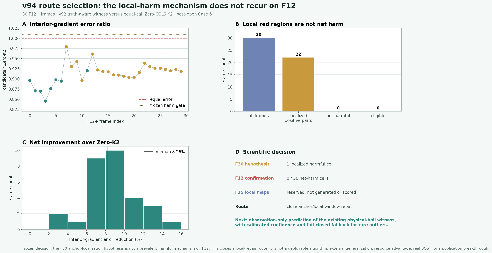
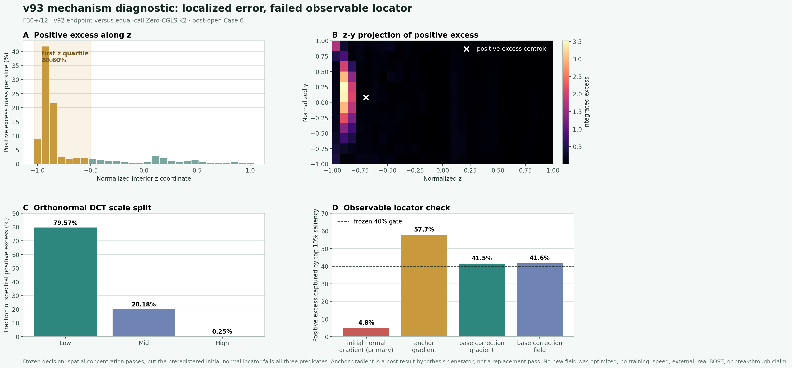
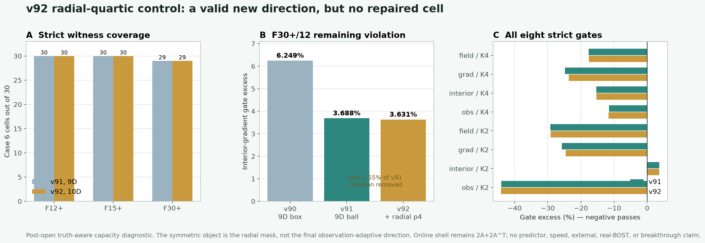
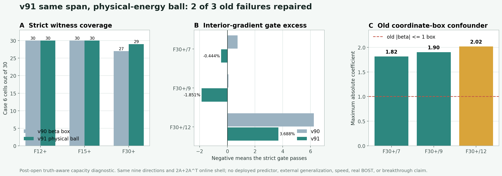
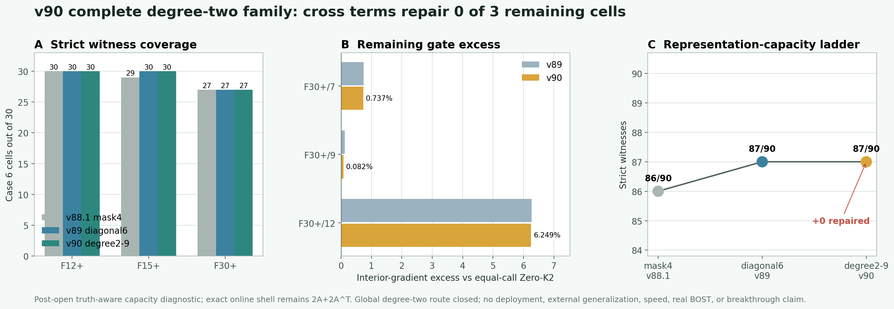
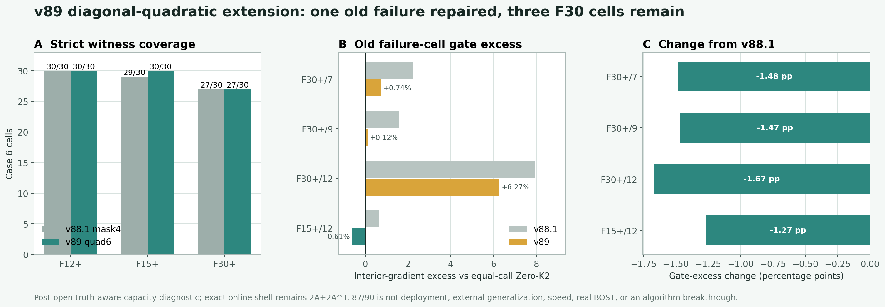
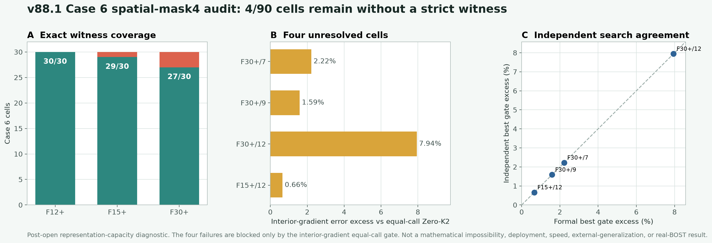
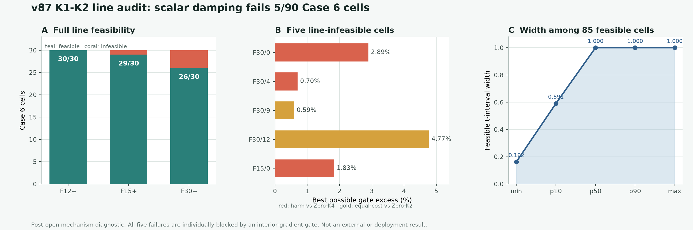
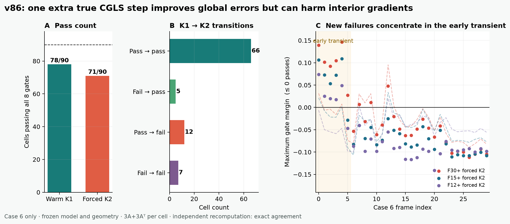
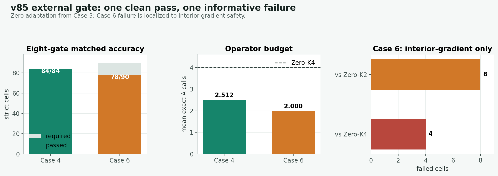

{kind=link}
要优化什么
在相同最终精度下，减少完整 A/A^T 调用；随后再以独立 fresh process 测 wall time 与 whole-pipeline peak RSS。理论调用减少不能代替真实资源实测。
研究一个可被严格检验的问题：让只读取多视角观测与报告几何的低成本初始化器，为 CGLS / PCGLS 提供更好的三维起点；只有最终场、梯度和观测误差均不劣于标准重建，才讨论减少昂贵的 A/A^T 调用、端到端时间和峰值内存。v191.1 定位到观测激活的正规度量失真；v192 验证自适应评分能部分改善，却仍无法让固定 1280 坐标预算通过完整容量门。
algorithm_breakthrough；当前紧凑表示已关闭32×16×16 → 63×31×31 → 125×61×61 → 249×121×121 上，field、内部梯度、观测的 p90 和 worst 单调门均为 3/3，逐单元全级单调比例均为 100%；8×/1× worst 为 0.251 / 0.329 / 0.177。平滑窗在所有粗节点上与原硬支撑差为 0；独立复算逐行最大差 1.58e-14、判据不一致为 0。这是数值机制门突破，algorithm_breakthrough=false；下一门正式进入最小坐标条件 observation-only initializer。查看完整证据。
A_phi/A_phi^T 伴随均闭合；然而三项粗网格保真门为 0/3，恒等坐标 fixed-anchor 为 0/15，正确形变候选为 0/90。normalized BP 消除了 v103 的百倍尺度病态，却没有恢复 matched-accuracy。停止幅值微调与大模型救援，下一门改为高分辨率/连续域输运收敛；algorithm_breakthrough=false。查看完整证据。
1.29e-15；漏掉 Jacobian 逆转置或相机量时，错误 warp 为 6.88%–132.56%。这只证明物理接口，不证明固定物理相机、未见位姿、SE(3)、任意微分同胚或 learned initializer 泛化。查看完整证据。
75/90，nested RBF KRR 为 71/90；全部候选保持 2A+2A^T。独立程序重建全部模型选择并重跑 270 个精确物理单元，最终判决一致，held-out target mutation 对预测与选择的影响均为 0。普通联合坐标回归路线关闭；下一门转向显式连续位姿、射线条件化与微分同胚可交换性。algorithm_breakthrough=false。查看完整证据。
algorithm_breakthrough=false。查看完整证据。
2A+2A^T。三档几何均为 30/30，独立重实现对 90 个单元复算后逐值差为 0；但系数仍由真值辅助寻找，所以当前只是表示容量突破，algorithm_breakthrough=false。查看完整证据。
81/90，高于父 K1 的 78/90；但九个失败全部被置信选择器接受。更关键的是，父 K1、mean、linear 与 RBF 的真值神谕并集上限也只有 83/90，所以继续调置信阈值无法达到 90/90。查看完整证据。
2A+2A^T receipt 的 endpoint 就足以证明存在。正式全局搜索与独立 Sobol + 局部搜索仍共同留下 F30 frame 7 / 9 / 12 和 F15 frame 12 四个反例；它们只被 interior-gradient / Zero-K2 非劣门阻塞，最优仍越线 2.22%、1.59%、7.94%、0.66%。正式/独立 90 个 endpoint 的 field、residual、metrics、gates 最大差均为 0。这关闭当前四参数表示的工程路线，不构成数学不可能或算法突破。查看完整证据。
x(t)=xK1+t(xK2-xK1) 的八个凸二次门做完整区间交集，得到 85 个非空、5 个空、0 个数值不确定。F12 / F15 / F30 分别为 30/30、29/30、26/30；五个反例都由一个 interior-gradient 门单独判死，线上最优仍超门槛 0.59%–4.77%。独立重建和另一种求根法得到同一判决，端点差 3.19e-15。查看完整证据。
2.5119A+2.5119A^T 守住全部 84 个单元；Case 6 虽只用 2A+2A^T，但 12 个单元越过内部梯度门，三档几何分别通过 28/30、27/30、23/30。失败分数与通过分数高度重叠，说明全局 scalar residual 不能识别局部内部梯度风险。两例均由独立程序重新预测、评分并核对调用账，声明差值为 0；联合门 FAIL，资源测试未授权。查看完整证据。
49/75 个单元接受 K1，26/75 个继续真实 CGLS K2，三档几何均为 25/25，平均调用为 2.3467A+2.3467A^T。独立程序重建 75 个单元、276 条 calibration、375 条策略、调用账、八门和标签扰动，全部最大差为 0。它是 v85 外测的开发父证据，不再代表最新外部结论。查看完整证据。
276/276、held-out 侧 75/75 均有直接八门见证；六个冻结 arm 的联合通过为 58 / 66 / 66 / 65 / 63 / 68。最佳 enriched148 RBF 的 7 个失败全部只越过 observation 相对 Zero-K4 的 no-harm 门，另外七门均通过。独立程序重建全部折、目标、450 个预测和八门，逐值最大差均为 0。关闭直接 point regression roster，不靠大网络补考；下一步转向可观测安全回退或追加一轮 refinement。查看完整证据。
73/75，留下两个 F30 失败；spatial-mask4 在 z / y / x / 径向四个空间调制方向上搜索，通过 75/75，并救回 v80 全部 17/17 个失败。两家族都保持 2A+2A^T，空间调制不增加 exact 调用。独立验证重跑 1950/1950 个终点，maximum gate 最大差 4.44e-16。这只授权一个最小 observation-only 四系数预测门；当前仍为 truth-aware 容量证据。查看完整证据。
0.00662% / 0.01197% / 0.01898%，75/75 单元均低于回顾性 0.1% 门。独立程序改用 Gram 距离公式复算，单元与汇总最大差均为 5.55e-11。因此停止把算力优先花在同一目标的多起点 canonicalization，下一门改为 observation-adaptive representation；替代目标的概念多解仍未检验。查看完整证据。
50/75 / 51/75 / 58/75，每档几何单独建模为 50/75 / 49/75 / 58/75。共享 RBF 的主要缺口是 observation 相对 Zero-K4 不伤害只有 65/75，以及同调用 interior-gradient 只有 68/75。独立程序重训并复算全部 450 份 outer prediction，raw / projected prediction 与 metric 最大差均为 0，gate 最大差 5.55e-16。这关闭固定特征、原始 witness 目标下的三类确定性模型，不关闭所有 observation-only 方法；神经训练、资源门、Case 4/6 与真实 BOST 均未授权。查看完整证据。
9/75，normal-residual control 为 0/75；两者 observation/K4 与 observation/K2 都是 75/75，但同调用 interior-gradient 只有 12/75 与 2/75。v79.2 独立重写指标与判决并复算 1,200 条 arm rows、300 条 outer rows，最终红队 P0=0 / P1=0。这关闭两个冻结解析 control，不关闭所有 observation-only predictor；神经训练、资源门、Case 4/6 与真实 BOST 均未授权。查看完整证据。
25/25，在线仍是 2A+2A^T；但冷构造每套几何要 160A+32A^T，当前 25 帧还不能写总加速。查看父证据。
2A+2A^T 在线预算；field 与 observation 八门各为 75/75，但相对同调用 Zero-K2 的 full-gradient 只有 27/75、interior-gradient 只有 7/75。独立程序重建三档模态并重跑全部声明起点和条件重启，最大 metric / gate / projector 差为 1.78e-14 / 1.20e-11 / 2.02e-13。这足以按预注册规则关闭 GSLB8，但不是数学不可行证明；只允许继续 GSLB32，不允许直接训练网络。查看完整证据。
x(c)=c1 h+c2 n，搜索本身不增加精确调用；75 个单元中 58 个存在严格负裕量见证，17 个由精确有理数 dual lower bound 证明交集为空，0 个数值不确定。独立重建最大差 4.80e-14。这关闭的是 span{h,n} 系数预测器，不是所有 learned warm start；Case 4/6、资源门和大网络均未启动。查看完整证据。
75/75 不劣，但 full-gradient 只有 46/75、interior-gradient 只有 5/75；相对 Zero-K4 的四项 joint harm 则为 74/75。这说明低频场和观测一致性有迁移信号，局部内部梯度没有稳定迁移。精度 FAIL 后没有运行 Case3 资源门，也没有用 Case 4/6 补考。查看完整证据。
0.65524 / 0.66111，但 worker-self、sampled worker-tree 与 sampled pipeline RSS p90 为 1.38447 / 1.37680 / 1.31112。30 个 reference、330 个 timing worker、165 个配对区组已由独立程序重算；block 与聚合最大差均为 0。保留 factor 仅约 5.63 MiB，当前失败定位在 factor setup 的瞬时工作区。下一门只允许流式构造/复用工作区并重跑完整精度与资源合同；仍不是神经算子、真实 BOST 或论文突破。
背景纹影从多视角图像位移反推三维折射率或密度场，本质上是昂贵且病态的逆问题。C 路线不替换物理求解器，而是学习一个部署时只依赖观测与已知几何的 warm initializer，再交给未修改的 CGLS / PCGLS 精化。这样既保留物理一致性，也能把“快多少、伤不伤精度、在哪些工况失效”拆成可复算的实验问题。
32×16×16 三维状态在相同最终精度下，减少完整 A/A^T 调用；随后再以独立 fresh process 测 wall time 与 whole-pipeline peak RSS。理论调用减少不能代替真实资源实测。
逐单元同时检查 field、full-gradient、interior-gradient、observation 四类误差及相对 Zero-K2 / Zero-K4 的八个门。任何局部材料性伤害都不能被平均收益掩盖。
当前已接入组内三维重建场与报告标定，但观测仍由 straight-ray forward 生成，尚无逐工况配对的实验二维位移。它能建立标定驱动的经典参考，不能冒充真实噪声、曲折光线或实验室真实 BOST 结论。
红队只核对论文、期刊与 arXiv 官方页面，并把任务、求解器、几何、物理提升、无害门和成本账分开判断；它收窄 claim，不把文献检索冒充算法结果。
A_g^T lift、未修改 Krylov、逐单元四类误差 no-harm、以及 exact-call + wall/RSS 门。但每个组件和多个组合都有先例；状态是 global_uniqueness_proven=false、algorithm_breakthrough=false。
三维光学逆问题、measurement-driven warm basis、精确 A/A^T 与 Golub-Kahan/Krylov 已被组合。剩余差别是 BOST 几何、精确伴随提升、未修改 CGLS 和逐单元成本合同。
真实高速流的九视角 neural-implicit BOS reconstruction 已公开；九视角、实验 3D BOS 和稀疏神经重建都不能再作创新点。
neural operator 给 CG/GMRES 初值并保持 solver infrastructure 不变已有先例；“learned warm start + unchanged Krylov”本身不是贡献。
BOST-specific observation/geometry-only initializer，经冻结离散算子的精确伴随提升后进入未修改 Krylov，并在外部与真实数据上通过逐单元非劣和完整资源账。它仍是假设，不是当前成果。
当前最重要的不是版本号数量，而是经过独立复算、真正改变路线判断的节点。
固定 1009 个 QDEIM 锚点，并用当前部署可见观测与报告几何补选 271 列。未修改 K1 后，五/九相机均达到 40/52，优于 v190 的 35/52 · 30/52 和幅值 control 的 32/52 · 26/52；但两臂仍各失败 12 个单元，完整时间层都是 0/4。独立第二实现 17/17 检查通过，判决 FAIL_NORMAL_CONTRIBUTION_OBSERVATION_ADAPTIVE_QDEIM_CAPACITY_V192。
五/九相机分别有 10/13 · 11/13 个固定 setup 在同一几何的四帧内混合成败，共 21/26。全部失败单元都违反完整正规方程；坐标差异中位数为 45.93% / 42.96%，其中 90.82% / 93.50% 的响应能量位于固定丢弃列。原始 v191 的近零相对比较失败被保留；v191.1 不重跑物理、不改数组，静态修复 15/15 通过，判决 PASS_OBSERVATION_ACTIVATED_NORMAL_METRIC_DISTORTION_ATTRIBUTION_V191_1。
从 v189 的完整逐相机 DCT 中，只依据报告几何固定选择 1009 个 QDEIM 锚点与 271 个杠杆补列。虽然保留 1009/1009 响应秩并减少 55.48% / 75.27% 坐标，未修改 K1 仍只达到五相机 35/52、九相机 30/52，完整时间层均 0/4。独立第二实现 59/59 检查通过，判决 FAIL_GEOMETRY_QDEIM1280_CORESET_CAPACITY_V190。
只补回 v188 截掉的 detector 频率后，每台相机使用 575 个非 DC 系数；未修改 K1 的五相机 / 九相机 field · gradient · observation p90 为 0.338439 · 0.549518 · 0.118081 与 0.240014 · 0.409766 · 0.116577。两臂均达到 52/52 cells、13/13 标定和 4/4 时间层，并在数值容差内复现 v185 稠密势域场。独立第二实现 50/50 检查通过，判决 PASS_DCT12_TRUNCATION_ROOT_CAUSE_V189。
取消跨相机池化后，未修改 K1 的五相机 / 九相机 field · gradient · observation p90 为 0.365208 · 0.620812 · 0.241597 与 0.797161 · 1.353802 · 0.594341。九相机较 v187.1 下降约 66.5% · 70.4% · 66.8%，但严格通过仍只有 2/52 · 0/52，完整时间层均为 0/4。独立第二实现 44/44 检查通过，判决 FAIL_CAMERA_RESOLVED_DCT12_CAPACITY_V188。
每套几何改用独立固定门伪逆后，未修改 K1 的五相机 / 九相机 field · gradient · observation p90 为 0.365208 · 0.620812 · 0.241597 与 2.378947 · 4.577949 · 1.792774；严格通过仅 2/52 · 0/52，完整时间层均为 0/4。独立第二实现 40/40 检查通过，判决 FAIL_GEOMETRY_LOCAL_FEATURE_CAPACITY_V187_1。
v185 的稠密势域容量仍成立。未修改物理 K1 后，五相机 / 九相机 field · gradient · observation p90 为 0.305891 · 0.484862 · 0.215971 与 0.284107 · 0.449993 · 0.235876；严格通过仅 39/52 · 25/52，完整时间层均为 0/4。独立第二实现 44/44 检查通过，判决 FAIL_POTENTIAL_SET_LINEAR_V186_1_1。
零均值探测器势场最差仍解释 88.57% 残差能量；然而 scalar-ray Jacobi 提升加未修改 CGLS K1 后，五相机 / 九相机 field · gradient · observation p90 为 0.661613 · 0.911014 · 0.402227 与 0.636139 · 0.841591 · 0.446146，严格通过均为 0/52。独立第二实现 50/50 检查通过，判决 FAIL_PROJECTION_POTENTIAL_WARM_V184。
联合分块 Galerkin 加未修改 CGLS K1 后，五相机 / 九相机 observation p90 从 v182 的 0.244595 / 0.266826 降到 0.226659 / 0.207224。两档 field 与 gradient p90 均过门，但 observation 仍高于冻结 0.20；严格通过为 1/52 与 37/52。独立第二实现 46/46 检查通过，判决 FAIL_OBSERVATION_BLOCK_GALERKIN_V183。
每套 reported geometry 分别构造 Jacobi 白化与 16 个谱校正后，primary K1 的五相机与九相机都只有 0/52；五相机 field / gradient / observation p90 为 0.510874 / 0.819616 / 0.568073，九相机为 0.483807 / 0.693110 / 0.581855。16 个模态只把逆残差 p90 降低约 0.71%。独立第二实现 48/48 检查通过，判决 FAIL_GEOMETRY_CONDITIONED_RANK16_INVERSE_V181。关闭的是固定几何条件 rank-16 家族，不是全部 observation-adaptive 机制。
primary K1 在冻结五相机下严格通过 4/52，全部九相机下通过 7/52，完整帧均为 0/4。两臂 field 与 gradient 总体守门，但 observation p90 为 0.311000 / 0.363093，均越过 0.20。原独立验证因近零均值相对误差保持 inconclusive；不改任何科学数组的窄审计 24/24 通过并确认判决 FAIL_SHARED_COMPACT_ADJOINT_PRECONDITIONER_V180。关闭的是固定共享线性映射，不是全部非线性或显式几何条件机制。
精确测量伪逆 K0/K1 在五相机下均通过 52/52、13/13 标定和 4/4 帧，测量秩为 1009/1009；九相机主臂同样全过。一次坐标迭代和静态均值对照均为 0/52，独立第二实现 36/36 项检查通过。判决为 PASS_AFFINE_MEASUREMENT_INVERSE_HEADROOM_V179。但缓存需要 26,260 次 forward-equivalent 投影，因此这里只证明可观测性，不是紧凑部署算法或算法突破。
1,010 个已开封训练场形成稳定秩 1,009 的仿射空间。真值可见投影在五相机 K0/K1 下均通过 52/52、13/13 标定和 4/4 帧；静态均值 K0/K1 均为 0/52。独立第二实现 26/26 项检查通过。判决为 PASS_TRAIN_FIELD_AFFINE_SPAN_HEADROOM_V178：线性场容量存在，但近满秩坐标的 deployment-visible 可预测性未证，不是部署算法或算法突破。
对 13 套标定×全部 126 个五相机子集×4 帧分别运行未修改 K4/K8：两者联合安全容量都为 0/52，九相机 K4 也为 0/52。K8 的 field / gradient / observation 单指标可行数为 0/52 · 52/52 · 52/52，因此失败不是相机排序，而是当前低深度场参考 / 表示。独立第二实现 25/25 项检查通过。判决为 FAIL_BROADER_KRYLOV_REFERENCE_REPRESENTATION_V177；它不关闭整个 C 路线，也不是算法突破。
冻结 v175 不重新拟合，在 13 套报告标定×4 帧的 52 个单元上严格安全 0/52，完整标定 / 帧为 0/13 · 0/4，相对自身同子集 K4 为 52/52 联合伤害。更深的归因是主策略 K4 也 0/52，四条策略的 K4 参考全部零通过，暴露更广的五相机 reference / representation mismatch。独立第二实现 35/35 项检查通过。判决为 FAIL_RESULT_UNOPENED_POOLFIRE_CONDITION_PARITY_V176；当前最小共享选择器迁移关闭，但整个 C 路线未关闭。
每折排除一套完整标定和一个完整三维场后，最多 357 参数的共享 Gram-ridge 风险模型只读取报告几何，并为留出场的四个时间输出同一个五相机子集。117 折、468 个物理重放单元全部通过，完整标定 / 场 / 时间为 13/13 · 9/9 · 4/4。fit-static、v169、ray-axis maximin 为 328/468、192/468、455/468；独立第二实现 31/31 项检查通过。判决为 PASS_MINIMAL_SHARED_SELECTOR_HEADROOM_V175。这是已开封受控代理上的最小选择器机制，不是外部泛化或算法突破。
四种相机选择策略全部使用同一个 H1-K0、同一个 1A+1A^T 成本和各自同子集 Zero-K4。v172 selector 严格安全 468/468，完整标定 / 场 / 时间为 13/13 · 9/9 · 4/4；fit-static、v169 与结果不可见 ray-axis maximin 只有 323/468、192/468、455/468，均未完整通过。独立第二实现 27/27 项检查通过，判决为 PASS_POSTOPEN_SELECTOR_ONLY_HEADROOM_V174。这授权最小共享参数 CPU 选择器门，但尚不是可部署算法或突破。
Selected H1-K1 与同子集 H1-K0 都在 468/468 个单元上严格安全，并通过完整标定 / 场 / 时间 13/13 · 9/9 · 4/4。主策略 field / gradient / observation p90 为 0.326808 / 0.610169 / 0.075055，H1-K0 为 0.327496 / 0.621204 / 0.118422；但 H1-K0 只需 1A+1A^T，是唯一通过的阻断对照。独立第二实现 21/21 项检查通过，判决为 FAIL_CLASSICAL_CONTROL_EXPLAINS_CAMERA_SELECTED_WARM_V173。当前 H1+K1 refinement 主张关闭，只保留同成本 selector-only 归因。
每个预测同时留出一整套标定、一个完整三维场和一个时间点，fit 侧只保留 12 套标定、8 个场和 3 个时间。最多 357 参数的 Gram-ridge 在 468/468 个单元上严格安全，完整标定 / 场 / 时间通过 13/13 · 9/9 · 4/4；fit-static 与 v169 对照只安全 323/468 与 192/468。四个 gradient p90 为 0.613132 / 0.623236 / 0.632018 / 0.621204，独立第二实现 22/22 项检查通过。判决为 PASS_WHOLE_FIELD_TIME_ISOLATED_GEOMETRY_SELECTOR_HEADROOM_V172。这排除了对九个场或四个时间的简单适配解释，但仍是 post-open 相机选择 headroom，不是完整 warm-start 算法。
最多 357 参数的 Gram-ridge 只读报告几何，在 13 个留一整套标定外折中严格安全 13/13，四个时间分层通过 4/4；fit-static 与 v169 对照分别只有 2/13 与 0/13。四个 gradient p90 为 0.612250 / 0.623236 / 0.630384 / 0.617378，独立第二实现 21/21 项检查通过。判决为 PASS_RESULT_BLIND_GEOMETRY_SELECTOR_HEADROOM_V171。这是 post-open 开发机制 headroom，不是 fresh 外门或完整 warm-start 算法。
在同一冻结 H1 与六项误差门下，穷举 13 套标定各自全部 126 个五相机子集，共 1,638 个算子设置与 58,968 个候选 cell。每套标定只用一个子集并跨 9 个场、4 个时间共用的真值见证通过 4/4；四个 gradient p90 为 0.733335 / 0.744963 / 0.748953 / 0.730538。独立动态规划 23/23 项检查通过，判决为 PASS_GEOMETRY_ONLY_SHARED_FIVE_CAMERA_SUBSET_CAPACITY_V170。这证明容量存在、v169 失败在目标，但还不是部署选择器。
选择器只读取报告几何，在 63 个 H1-whitened 低频 DCT 模态上按秩、log-pseudodeterminant、最小正特征值和 trace 选择 5/7/9 相机子集。5/7 相机名单在 13/13 套标定中都不同于旧固定名单，但主策略只通过 8/12 分层：七、九相机全过，四个五相机全失败。t=0.75 五相机 gradient p90 / worst 为 0.895914 / 1.026562，明显差于冻结 H1 的 0.758639 / 0.835752。独立第二实现 27/27 项检查通过，判决为 FAIL_GEOMETRY_SELECTED_CAMERAS_V169。
四个边界渐消包络各生成三个 curl 速度，形成 12 个解析无散的局部旋涡方向；主策略仍只通过 10/12 分层。t=0.75 五相机 gradient p90 / worst 为 0.817990 / 1.158071，t=1.0 为 0.759393 / 1.271909。非初始 cell 仍为 13A+1A^T，两组尾部均差于同预算 v167 和便宜 H1；独立第二实现 60/60 项检查通过，判决为 FAIL_OBSERVATION_LOCAL_DIVFREE_VORTEX_V168。
四个平滑空间分区各配三维平移速度，形成 12 个局部连续性方向；主策略仍只通过 10/12 分层。t=0.75 五相机 gradient p90 / worst 为 0.813123 / 1.145759，t=1.0 为 0.757524 / 1.244834。非初始 cell 仍为 13A+1A^T，两组尾部均差于同预算 v166 和便宜 H1；独立第二实现 58/58 项检查通过，判决为 FAIL_OBSERVATION_LOCAL_CONTINUITY_FLOW_V167。
用连续性方程切向 -div(rho*u) 与精确 1/det(A) 密度因子重做同一 12 参数全局仿射后，主策略仍只通过 10/12 分层。t=0.75 五相机 gradient p90 / worst 为 0.795556 / 1.059791，t=1.0 为 0.730257 / 1.087987。非初始 cell 仍为 13A+1A^T，且未超过便宜 H1；独立第二实现 53/53 项检查通过，判决为 FAIL_OBSERVATION_CONTINUITY_AFFINE_TRANSPORT_V166。
去掉全部仿射项后的 12 参数交叉模式仍只通过 10/12 分层。t=0.75 五相机 gradient p90 / worst 为 0.801162 / 1.080751，t=1.0 为 0.759218 / 1.148727。非初始 cell 与 v164.1 同为 13A+1A^T，独立第二实现 48/48 项检查通过，判决为 FAIL_OBSERVATION_CROSSTERM_TRANSPORT_V165。
观测拟合的 12 参数三维仿射流通过 10/12 分层；无输运 centered-H1 control 也为 10/12。t=0.75 五相机 gradient p90 / worst 为 0.788531 / 1.078302，t=1.0 为 0.765210 / 1.157668。非初始 cell 成本为 13A+1A^T，独立第二实现 39/39 项检查通过，判决为 FAIL_OBSERVATION_AFFINE_TRANSPORT_V164_1。
主策略只通过 7/12 分层；同尺度静态 L2 control 只过 1/12。t=0.75 五相机 gradient p90 / worst 为 0.939342 / 1.358706，t=1.0 为 0.864791 / 1.433536。独立第二实现 28/28 项检查通过，判决为 FAIL_TEMPORAL_INNOVATION_L2_V163。
v162 以完整几何张量保留非对角耦合后仍通过 11/12 分层。唯一失败仍是 t=0.75 五相机，gradient p90 从 H1 的 0.758639 与对角方案的 0.768197 改善到 0.751035，但仍高于 0.750000。独立第二实现 21/21 项检查通过，判决为 FAIL_FULL_TENSOR_GEOMETRY_H1_TEMPORAL_V162。这是关闭当前全局二次型几何各向异性家族的机制负结果。
纯几何三轴权重通过 11/12 分层；唯一失败仍是 t=0.75 五相机，gradient p90 为 0.768197，高于 0.750000 且劣于 H1 的 0.758639。独立第二实现 19/19 项检查通过，判决为 FAIL_GEOMETRY_ANISOTROPIC_H1_TEMPORAL_V161。
同一四时间 × 5/7/9 相机门下，半阶先验只过 8/12；四个五相机 gradient p90 为 0.777 / 0.771 / 0.810 / 0.772，全部高于 0.750 且均劣于 H1。独立第二实现 19/19 项检查通过，判决为 FAIL_FRACTIONAL_SOBOLEV_TEMPORAL_V160。
第一个输出作为密度、t∈[0,1]，相机与二维双分量投影由代码生成。唯一失败是 t=0.75 五相机 gradient p90 0.758639 > 0.750000。独立第二实现 17/17 项检查通过，判决为 FAIL_TEMPORAL_REFERENCE_TRANSFER_V159_1。
预注册主策略在五/七/九相机的 field p90 为 0.630 / 0.452 / 0.323；七/九相机通过，五相机仍高于 0.500 门。独立第二实现 18/18 项检查通过，判决为 FAIL_SPECTRAL_SMOOTHNESS_REFERENCE_V158。
在 24×24、DCT1024-CGLS K16 下，九相机 field / gradient / observation p90 为 0.482 / 0.720 / 0.166，全部通过；五/七相机仍越过 field 与 gradient 门。独立第二实现 17/17 项检查通过，判决为 FAIL_REFERENCE_ADEQUACY_V157。
p45-s05 的 state / geometry 贡献为 71.91% / 28.09%；p58-s03 / p58-s05 的 geometry 贡献为 38.66% / 38.59%。六项独立科学检查通过，判决为 ROOT_CAUSE_MIXED_SUPPORT_GAP_V155。
加入全部四条剩余完整 post-open train 候选后，整体支持率为 87.07%，只有 7/10 轨迹通过汇总门。p45-s05 / p58-s03 / p58-s05 仅 16.79% / 77.62% / 87.13%。独立第二实现 20/20 项检查通过，判决为 FAIL_BROADER_TRAIN_COVERAGE_V154。
原 p33 的 5/7/9/12 相机支持由 83.68% / 91.81% / 97.24% / 97.79% 变为 71.14% / 82.93% / 89.07% / 94.77%；p45 完整轨迹仅 7.60%。独立第二实现 15/15 项检查通过，判决为 FAIL_TARGET_FREE_MONOTONE_COORDINATE_SUPPORT_V153。
加入一条公开 p33 同功率不同尺寸训练轨迹后，原 p33 的 7/9/12 相机支持率达到 91.81% / 97.24% / 97.79%，但 5 相机只从 76.86% 提到 83.68%。新增轨迹自身四档相机数均通过，并救回原轨迹 265 个 active camera rows。独立第二实现 17/17 项检查通过，正式判决为 FAIL_P33_SAME_POWER_MUTUAL_SUPPORT_V152。
在 60,654 个 active camera/component rows 上，v149 scalar-summary baseline 的全局支持率为 84.43%，signed-spatial peer state 降为 67.42%。它把最差 component 分层从 0.216% 提高到 4.98%，但 p33/p45/p58 仍只有 48.25% / 43.24% / 46.73%。独立第二实现逐项复算通过，当前 state 在 predictor 训练前关闭。
在五条已开封 PoolFire 轨迹的 3700 个单元上，truth-aware oracle 保持 3700/3700、5/5；visible seed、fit mean、线性 ridge 与 RFF ridge 分别为 2951、11、3089、2137 个单元通过，四个 deployment-visible 方法均为 0/5 轨迹。独立实现复现了 oracle、seed、mean 与线性分支；RFF 因浮点哈希子集不连续产生 0.01168 的预测差，超过冻结容差。正确状态是 INCONCLUSIVE，当前预测器族关闭，不做物理 replay 或 GPU 扩模。
同一 20 个冻结哨兵上，当前样本的 exact-K1 dual、带符号 residual 与报告几何生成 96 个固定方向。可见 seed control 为 18/20、2/5，global 四系数 oracle 为 18/20、3/5；每个相机/分量组使用四阶系数后达到 20/20 与 5/5，误差 p90 / worst 为 0.15074 / 0.21897。独立 block 预测最大差 1.46e-12，十四项检查全过。
在同一 20 个冻结哨兵上，部署可见 155D 方向局部特征先封存邻域，再由 post-open truth-aware oracle 求 96D action 的最优跨度投影。cross span-32 通过 14/20 哨兵、1/5 轨迹尾部；within span-32 上限为 18/20 与 2/5。最近 5% 邻域中的跨轨迹 740/740 与同轨迹 200/200 候选均冲突，但这不是精确碰撞。独立 Gram-eig 重算投影最大差 9.01e-15，十三项检查全过。
在同一 20 个结果前冻结哨兵上，155D 方向局部特征、90D 全局 moments 与 486D 可观测位姿耦合均没有形成跨轨迹可用信号：local-only、local+moments 与 local+pose 都只通过 1/20，最佳跨轨迹误差中位数为 0.61131；同轨迹 local-only 上限诊断也仅 9/20，五条轨迹 p90 全部超过 0.35 门。独立实现的整数邻居完全一致，浮点数组最大差 8.88e-16，九项检查全过。因 Stage A 失败，3700 单元 Stage B 没有运行。
排列不变的 94D moments 与 580D observable-pose coupling 在完整轨迹留一中均为 0/20 哨兵、0/3700 单元和 0/5 轨迹；同轨迹诊断也全部为零。第二实现的整数数组完全一致，浮点数组最大差 1.31e-12，九项检查全过。跨轨迹相机数混合明显，但同轨迹同相机数边已超过 95% 仍全失败，因此它不是充分解释。
结果前冻结的跨轨迹八近邻只通过 1/20 哨兵，误差中位数 0.60845；同轨迹诊断虽改善到 8/20 与 0.44161，五条轨迹 p90 仍全部高于 0.35 门。第二实现的整数邻居数组完全一致，浮点数组最大差 8.88e-16。初始 validator 只因嵌套 JSON 浮点值相差 1.11e-16 而机械 inconclusive；透明的结果后容差审计不改邻居、预测、目标、阈值或判决，确认同一负结果。
在已开封的 3700 个 PoolFire 单元上，oracle 反演最大误差 0.00308，低于 0.02 门，说明坐标映射本身可用；但部署可见共享线性预测的目标误差中位数为 0.99964、余弦中位数为 0.02688，0/20 哨兵通过，五条轨迹 p90 均近 1。独立复算数组一致；初始验证器对大量纲 condition 数误用绝对差门而记为 inconclusive，透明的结果后量纲审计用对称相对差 8.35e-11 确认数值一致，不改模型、门或科学结论。
fixed teacher 的表示容量仍为 3700/3700、5/5，但正式特征视图和独立重建的几何特征视图都只通过 1/3700 个单元、0/5 条完整轨迹；最大指标比为 1.93336。两视图指标比最大差仅 2.59e-11，19/19 完整性检查通过，因此失败不是特征重建数值漂移。候选账为 3A+3A^T，但未达同精度，不能称降调用。当前共享线性分支按合同关闭，不换目标、不重扫 lambda、不用更大 CNN/FNO 挽救。
v141 堆叠链因跨 outer-fold 上游泄漏在 prediction/score 前作废。v142 只以 exact K1 dual、signed residual 与报告几何生成成对深度方向；warm K1 在 5/7/9/12 相机各一个固定困难单元上为 4/4，最大四指标比 0.99645，三个同成本 control family 均未全过。独立 warm-field 相对差为 8.87e-10。但 initializer-only 2A+2A^T 也为 4/4，所以只授权全量审计。
固定 Stage B active tail 达到 2199/2199，与父证据合并后达到 3700/3700 与完整轨迹 5/5。结果前预注册、且不读 CFD 真值的 pair_depth_projection_only 自身同样全过；廉价 joint-LS 为 0/2199。独立物理 field/projection 图像最大归一化差为 4.49e-9 / 4.46e-9，低于 1e-6 门。下一步先为全 3700 单元重建同一固定教师，禁止 active-tail 真值成员标签；这是容量，不是部署预测或算法突破。
每路 signed K1 residual 沿真实报告射线回投到冻结 16×8×8 粗网格，逐体素保留 active-camera 一致性与冲突，再以固定 P1/P2 深度矩投回 detector 方向。在同一 2A+2A^T 壳中比 v138 新救回 152 个，7/9/12 相机均为 925/925；但 5 相机仅 774/925，剩余 151 个失败全部只在 observation，完整轨迹仍 0/5。便宜 deployment-visible joint-LS 为 0/3700；v139.3 独立复算 selected metric 最大差 1.54e-11。固定 P1/P2 深度矩表示因此关闭，下一门转向 5 相机 target-ray 多假设深度代价体。
每个目标 detector ray 使用三个冻结 GL3 深度锚点，通过报告相机几何重投影到 peer cameras，双线性采样 signed residual，再以相机集合换序等变方式聚合。该机制在同一 2A+2A^T 壳中新增救回 46 个；9/12 相机全部通过，7 相机只剩 5 个失败，但 5 相机仍剩 298 个，占全部 303 个 observation-only 失败的 98.3%。便宜 ray-overlap joint-LS 为 0/3700，完整轨迹仍 0/5。v138.3 独立复算 selected metric 最大差 6.99e-15，因此关闭三锚点射线平均并转向深度分辨的三维射线一致性体。
本相机 signed phase 救回 92 个单元，peer residual 经已知相机坐标系耦合后再救回 44 个；9/12 相机全部通过，7 相机只剩 6 个失败，但 5 相机仍剩 343 个，占全部 349 个 observation-only 失败的 98.3%。便宜 signed-phase joint-LS 为 0/3700，完整轨迹仍 0/5。v137.1 独立复算选择指标最大差 3.89e-15，因此关闭同像素 peer 聚合并转向射线重叠/极线输运。
窗口中心与尺度只由部署可见 K1 residual 能量生成，在同一 2A+2A^T 壳中仅新增救回 53 个单元；完整轨迹仍 0/5，其余 485 个失败全部只在 observation，其中 409 个来自 5 相机。被救回与未解决单元的质心/宽度统计高度重叠，便宜 adaptive projection-only 控制为 0/3700。v136.1 独立复算选择指标最大差 9.99e-16，所以关闭能量包络窗口并转向 residual 正负相位与跨相机结构。
六档 projection weight 加 projection-only 端点在同一 v133 四频带 span 内修复 238 个单元，但完整轨迹仍 0/5；其余 1109 个失败全部只在 observation。projection-only 单独已通过 2564/3700，有限 Pareto 只再增加 27。独立复算指标最大差 2.23e-15，因此关闭简单目标调权并转向局部空间-频率表示。
四个平滑局部窗口严格包含 v134，在同一 2A+2A^T 壳中救回 571 个单元；但完整轨迹仍 0/5，其余 538 个失败全部只在 observation，其中 442 个来自 5 相机。便宜的 residual-only 局部 LS 为 0/3700。v135.1 独立复算物理指标最大差 2.11e-15，所以关闭固定窗口并转向 residual 自适应窗口。
逐相机、逐位移分量的四频带 DCT span 严格包含 v132 标量混合；同一 2A+2A^T 壳中，field、完整梯度和内部梯度均为 3700/3700，剩余 1347 个失败全部只在 observation。五条完整轨迹仍 0/5，因此不训练系数预测器。独立复算 oracle 指标最大差 9.99e-16。
每个 active camera 获得一个由已开封真值求出的最有利标量，随后经过同一 2A+2A^T K1 物理壳；五条轨迹仍为 0/5。oracle 的 field p90 为 1.0891–1.1336，observation p90 为 1.2164–1.4135。独立实现以普通逐相机 adjoint/forward 与特征分解重算，oracle 指标最大差 4.44e-16。这关闭逐相机标量增益路线，下一门必须改变 detector-space 空间或频率形状。
冻结的 11484 参数相机集合模型完成五折训练、3700 个 deployment-only 留出预测和同一 2A+2A^T 物理壳评分；五条轨迹均未达到 K4 同精度。独立复算对 prediction、metric、summary、control 和调用账的最大差均为 0。模型虽优于 Zero-K2，但普通 dual-L2 只学到总体方向，没有守住由 A/A^T 放大的敏感形状误差，因此当前表示关闭。
在五条轨迹、3700 个扰动单元上，一组精确 K1-residual correction dual 以 2A+2A^T 数值复现 K4；最大 field / residual 差为 6.12e-16 / 1.34e-15。Zero-K1/K2、原始 residual、视角均衡和 box3 控制全部 0/5。独立复算逐数组与指标差为 0，因此只授权一个最小 v131.1 模型。
冻结的 11504 参数相机集合模型完成五折训练与 3700 个留出单元评分；五条轨迹全部未达到 K4 同精度，global observation ratio p90 / worst 为 1.4499 / 1.7946。独立程序重载五个 checkpoint 并重算预测、物理壳、控制和调用账，最大指标差 6.66e-16。
用 K3 解对偶和 K3→K4 共轭方向对偶构成两个 detector-space 状态，经 2A^T+2A 与可观测二维盒约束最小二乘，3700/3700 单元复现 K4。独立场 / residual / metric 最大差为 2.50e-15 / 7.44e-15 / 6.66e-16。
即使直接使用精确 K3 solution dual，提升后重启一次 CGLS 仍在五条轨迹全部失败；field / observation 的 p90-higher 为 1.0884 / 1.1125。这定位了丢失共轭方向的结构问题，因此禁止用更大网络挽救 v129。
37 种条件展开为 740 个 rig、3700 个物理单元和 33300 行控制。combined stress 的场 / 梯度 / 观测 p90 harm 为 +1.84% / +3.74% / +6.81%；geometry-PCGLS K2 仍比 K4 的场误差 p50 高 17.68%。所有独立数值差为 0。
五条已开封 fit 轨迹、每条 5 帧、5 / 7 / 9 / 12 相机与 clean / medium / stress 三档共 300 个物理单元。clean K4 场误差 p50 从 0.7486 降到 0.6112，相对降低 18.35%；独立数组、指标、rig 与聚合差全为 0。
64 个三维 Gaussian-field 样本覆盖 5 / 7 / 9 / 12 个相机、四档观测/标定噪声。乱序恢复、独立数组与指标复算最大差均为 0。这只建立输入与数据合同；下一门接 PoolFire 并先跑经典基线。
1515/1515 精度兼容；exact 调用从 4A+4A^T 降为 2A+2A^T，fresh wall 中位数下降 43.49%，三类 RSS p90 均过门。只证明已开封同族代理。
Case 4 为 84/84；Case 6 仅 78/90，12 个失败全部落在内部梯度。说明全局 residual gate 无法识别局部风险。
严格可行单元 85/90；五个内部梯度反例证明 scalar damping 自由度不足，不能靠调一个系数修复 Case 6。
新方向非退化，但 F30+/12 越线只从 3.688% 降到 3.631%，严格容量仍为 89/90。停止堆全局径向阶数，先定位缺口。
前 10% 体素承载 76.71% 正误差，79.57% 属于低频；预注册法向残差定位器最高 10% 只捕获 4.84%，不能直接生成局部窗口。
F12+ 的候选 / Zero-K2 内部梯度误差比全部低于 1；22 帧虽有集中的局部正误差，但 30 帧总 signed excess 全为负，不能把局部红区误写成净伤害。
线性 observation-only predictor 证明九维坐标存在可学习信号；然而九个失败全部落在内部梯度，且完美候选选择仍留下七个共同失败。关闭固定九维小模型与 confidence-only 修补。
从父 residual 和 known geometry 生成四个频谱带方向，精确嵌套旧九维 family；三档几何各 30/30，独立复算逐值差为 0。当前是 truth-aware 容量正结果，不是部署预测成功。
最佳冻结基线从 81/90 修到 86/90，却仍留下四个 interior-gradient 失败；三个基线均未通过条件容量门。独立复算 270 次精确回放后关闭四系数训练，转向 13D 联合适配。
允许旧九维与新四维共同变化后，简单模型仍未达到 90/90；270 次独立精确回放确认结果。失败集中在较早时间折与 F30+，下一门不再堆普通回归器，而是验证相机几何和坐标变换的一致性。
完整变换在两个三维格点旋转和一个光滑剪切上达到约 1e-16；错误 warp 产生 6.88%–132.56% 偏差。下一门是连续 pose/ray 与 leave-one-geometry-out。
direct target + strict K1 为 90/90，但完整留出相机几何和连续时间块后，rank 0 至 40 的共享线性终点场空间最多只有 2/90。独立程序重建 15 折与 630 次精确 K1，判决一致。
相机无关 physical-reference family 在 15 个 geometry-time 外折上完整过门；匹配的 geometry-specific endpoint rank 4 仅 37/90。独立程序重算 43 个臂与 3870 次 strict K1，正式差值全部为 0。
正确输运的 projected-ridge、linear、RBF 均为 90/90，no-transport 对照只有 71/90；三种 eligible 方法都没有稳定优于 static rank 0。独立程序重建 15 折、7 臂和 630 次 strict K1，最终逐值差全部为 0。
六类可逆形变的 Jacobian、逆映射与变换算子伴随全部通过；但 field、内部梯度、观测保真门为 0/3，identity normalized-BP + K1 为 0/15，正确形变为 0/90。独立复算最大数组差 1.17e-15。
从原始 CFD 构造 32×16×16 至 256×128×128 四级三维场。8× field、内部梯度、观测 worst 为 0.0342 / 0.1247 / 0.0314；但非嵌套 2× 网格三项全部恶化，p90 与 worst 单调性均为 0/3。正式和独立各复算 360 行，布尔判决差为 0。
v106 先因未形变观测基线随分辨率漂移而 fail-closed；v106.1 只统一 field、gradient、observation 的粗网格零均值规范。严格嵌套节点和精确 stride 下，三项 p90/worst 单调为 3/3，逐单元全级单调均为 100%。360 行独立复算的汇总最大差 1.18e-13。
把各级硬支撑保持为一个粗网格间隔后，8× field / gradient / observation worst 变为 0.2431 / 0.3192 / 0.1073，完整收敛门 0/3。这确认旧通过含有边界层随网格变薄的混杂。
取消变换坐标系中的轴对齐重新裁边后，gradient 与 observation 的尾部恢复逐级下降；field 仍在 4× 反弹，逐单元全级单调仅 26.7% / 46.7% / 33.3%。
半余弦窗在所有粗节点上与原硬支撑逐点相同，只平滑粗节点之间的边界。8× worst 为 0.02647 / 0.09567 / 0.02312，三项 p90、worst、最终比值、绝对门和逐单元门全部通过。独立 360 行复算最大差 1.58e-14。
initializer 往返 450 行，worst 0.06524；真值往返 30 行，worst 0.22335，超过 0.14 上限。最坏 20/20 行全部来自真值，正式与独立最大差 2.43e-16。
正式多轨迹结果覆盖 2970 个 candidate cells、990 个 control cells、270 个 predictions 和 90 个 input bundles；独立复算最大数值差为 0，当前没有简单 frozen control 支配 candidate。
rank-4 每个 11 帧上下文总账 38 次，对候选 44 次，但五条轨迹联合门均失败；rank-32 为 66 次且同样 0/5。独立复算最大差 6.67e-16；90 份真值扰动下 180 个部署上下文预测不变。
不读真值、不反投影：在 900 个相邻帧对、8100 个视角单元上直接对双分量梯度图的模长做二维相位相关。只有 16.04% 的单元同时出现非零移位和正改善，低于预冻结 20% 门；中位改善为 -11.02%。独立程序逐行与汇总复算最大差均为 0，因此关闭这条直接观测域二维搬运。
在所有 990 个部署侧 proposal 构造完后才解码真值。159 个含 v117 信号的上下文中，initial-field error reduction 的 p10/p50/p90 为 -16.12% / -9.67% / -4.16%，正改善比例 0%；独立重算逐行和汇总差均为 0。因此停止这一搬运对象，不进入 K1 或训练。
同价的确定性残差搬运被 q8+K1 在三个报告 seed 全面支配，故该公式停止。作为彼此独立的物理检查，v120 仅检查预封存的 202 个局部 BP 位移与真实密度的对齐：正对齐比例 76.24%，误差降低 p50 为 21.18%；独立逐块与汇总复算最大差均为 0。这是机制线索，不是 warm-start 成功。
独立 FFT phase-correlation 实现重放 900 个当前/前一时刻 BP 对；900/900 均可识别，但非零全局整数 shift 为 0，超过预注册 1e-12 阈值的一致性改善也为 0。独立复算的最大 shift 与改善差均为 0。这只关闭全局刚性平移机制，不排除局部或非刚性输运。
独立实现重放 270 个 deployment-only prediction、两侧各 2970 个 cell，正式数值、field 与 residual 最大差均为 0，且封存 prediction/score 文件没有变化。seed 2203 与 3301 均在五轨迹 p90/worst 尾部失败，故当前坐标条件 CNN 不能宣称稳定优势。
缩放精确 BP K0/K1、几何 PCGLS K1/K2 与 conditional dual ridge 共覆盖 4950 个控制单元。五个控制各为 0/990 joint pass 与 990/990 severe harm；最强 dual ridge 的最坏轨迹 observation p90 比值仍为 1.7088，高于 1.01 门。独立复算最大差为 0。
单轨迹、单几何 pilot 的全部 11 帧通过，severe harm 为 0；field / interior-gradient 中位误差比为 0.44043 / 0.61411。独立逐帧最大差 4.94e-8，候选完整账 2A+2A^T。

独立页面从 2026-07-06 起逐日记录：做了什么、为什么做、正式结果、独立验证、失败边界与下一科学门。协议、下载、页面和测试数量不会被写成算法成果。
每个关键结果都有正式运行、独立程序复算、逐单元误差、真实调用账和公开脱敏摘要；失败同样完整保留。
正在读取稳定状态清单；读取失败时保留页面内的静态审计结果。
v192 保持 v190/v191.1 的四帧、13 套标定、固定 1280 坐标预算和未修改 K1，只把 271 个补列改成由当前观测正规缺陷贡献决定。五/九相机从 35/52 · 30/52 提高到 40/52 · 40/52，并优于幅值 control 的 32/52 · 26/52，证明归因有机制意义；但两臂仍各失败 12 个单元、完整时间层 0/4。独立复算 17/17，因此这一精确固定预算机制关闭，不进入预测器或资源门。
以下顺序不可交换。当前只完成了前置筛选的一部分，后面的训练、外部验证与真实实验都尚未被授权为成功。
A_phi/A_phi^T；最坏伴随相对误差 5.59e-14。32/63/125/249 节点与精确 stride 下，field、内部梯度、observation 的全部冻结收敛门均通过。0/52，完整标定 / 帧为 0/13 · 0/4；同子集 K4 也 0/52。当前最小共享选择器迁移关闭。0/52，九相机 K4 也为 0/52；K8 虽把梯度与观测救到各 52/52，field 仍 0/52。低深度场参考壳关闭。52/52，静态均值 K0/K1 均为 0/52；排除线性场容量缺失。但稳定秩 1009/1010，尚非紧凑部署表示。52/52，测量秩 1009/1009；一次坐标迭代与均值均为 0/52。排除观测信息不足，但缓存成本 26,260，仍非紧凑部署表示。4/52、九相机 7/52；field 与 gradient 总体守门，但 observation 尾部失败。固定共享线性映射关闭，不事后扩 rank 或租 GPU。0/52；16 个谱校正只把逆残差 p90 改善约 0.71%。固定几何条件 rank-16 家族关闭，不事后调 rank 或谱规则。0.244595 / 0.266826，field 与 gradient 通过，但两者仍高于 observation 的 0.20 门；两臂均为 0/52。当前一步对角机制关闭。0.226659 / 0.207224，严格通过提高到 1/52 · 37/52；但两者仍高于 0.20。相机×分量异质性有用，每块一个固定系数仍不够。88.57% 残差能量，但提升到三维后，五相机 / 九相机 K1 的三项 p90 全部失败，均为 0/52。二维可积性不能单独确定 field-compatible 三维暖方向。1009/1009 可观测秩；未修改 K1 后五相机 / 九相机均为 52/52、13/13。这把 v184 失败归因于有损 lift，但稠密逆每个 sensor setup 需 1013 个势变换右端，仍非紧凑部署。39/52 · 25/52，完整时间层均为 0/4；失败集中在 observation 尾部。当前表示关闭，不扩大到 CNN/FNO/UNO。2/52 · 0/52，完整时间层均为 0/4。保留秩 715-1001、最高条件数约 6.65e7；共享回归并非唯一瓶颈，当前汇聚特征本身关闭。66%–70% 却仍 0/52，五相机仍 2/52；完整时间层均为 0/4。池化是重要损失来源但不是唯一瓶颈，DCT12 截断关闭。575 个非 DC 系数后，未修改 K1 的五/九相机均为 52/52、13/13 标定与 4/4 时间层，并数值复现 v185。DCT12 截断因此被确认是 v188 失败的根因；完整基仍非紧凑部署。1009 个 QDEIM 锚点和 271 个杠杆补列。虽保留 1009/1009 响应秩，五/九相机 K1 仅 35/52 · 30/52，完整时间层均 0/4。固定预算子集无法保住完整 DCT 的物理容量。21/26 固定 setup 在帧内混合成败；五/九相机约 90.82% / 93.50% 的缺失响应能量位于固定丢弃列。子集解对自身目标已收敛，却违反完整正规方程。原始 inconclusive 保留，静态修复 15/15；仅完成机制归因。271 列后，五/九相机均提高到 40/52，但两臂仍各失败 12 个单元、完整时间层 0/4。机制部分有效却容量不足；固定 1009 + 271 家族关闭。高速反应流包含大量连续帧与多视角数据。若 warm start 能少做若干次完整 forward / adjoint，收益会随帧数和实验批次累积。
学习模块只负责起点，最终仍由显式物理算子和未修改迭代器精化；观测残差与几何信息还能用于拒绝危险候选。
Case 6 已显示平均 field 变好并不代表内部梯度安全。逐单元八门把会破坏火焰局部结构的失败直接显露出来。
路线会随负证据收缩，而不是因为已经投入很多时间就继续堆模型。
v192 已证实观测自适应评分只能部分救回固定子集，当前 1009 锚点 + 271 补列家族关闭。后续只允许结果前冻结一个物理上真正不同的结果不可见机制，或等待新的成对真实二维双分量 BOST 位移数据；不提高预算、不调评分。
现在仍不租：v192 连非训练容量门都未通过，扩大模型或算力不能修复这一证据。只有新的物理机制先在 CPU 上通过容量、严格 observation-only 预测和物理重放，并实测训练吞吐成为主要瓶颈，才重新评估 GPU。
公开 CFD 阶段保留 clean baseline，分别加入观测噪声、旋转、平移、焦距/主点与 combined 误差，并把 5/7/9/12 相机以及增删、换序作为独立鲁棒性门。实验数据到位后，再接入真实位移图、相机内外参、重复测量噪声、现有重建代码和认可基线。
历史状态保留：此前“最新判决：v111 单轨迹未见形变学习信号已独立复算”只描述 pilot；现在正式主页已经更新为 Formal Stage A 15/15 结果。
以下文字只用于保留旧页面的可追溯索引，不代表当前最新判决。
FAIL_EXTERNAL_CURVED_RECONSTRUCTION_RESOURCE_V27；冻结差距为 2.19%-2.89%，没有算法突破。0.744260 与 0.825418，但 all official PoolFire test streams historically opened，不能重新包装为 fresh 外部证据。公开 proxy 的固定顺序是逐轨迹 field/gradient/observation compatibility 与 harm 先过门，随后才比较完整 A/A^T，最后实测 fresh-process wall 与 whole-pipeline RSS。它不能冒充真实实验“同精度”；任何平均收益也不能抵消某条轨迹的材料性伤害。
D^-1A^T y 都已有在先工作。当前有机会形成贡献的是已审阅来源中尚未发现的完整组合：BOST 特定双空间 proposal、由构造保证的 Range(A^T) 提升、pre-A^T 可见量风险门、未修改 CGLS K1、单侧非劣与完整成本证据。它是有界检索下的原创性假设，不是全球唯一证明。
field、gradient、observation 逐 trajectory 报 p50、p90、worst 与 harm。开发容差不能冒充“精度相同”；论文界限还要由噪声、离散误差或实验分辨率支撑。
BP、Krylov basis、非零初值 residual、refinement 与 fallback 全部入账；调用减少不自动写成 wall-time 加速。
网络推理、特征准备、缓存、模型文件和失败回退都计入 fresh process；Mac CPU 与未来 GPU 分开报告。
Cross14 用来验证自由局部三维 residual 是否跨轨迹可用，并作为最终方法的消融和反例。换成 FNO/UNO/DeepONet 本身也不构成原创性。
网络只输出观测空间 proposal z_theta(y)；物理初值固定为 x0=alpha A^T z_theta(y)，解析 alpha 的区间包含 0，随后只做一次未修改 CGLS。初值由构造属于 Range(A^T)，接受分支总账为 2A+2A^T。旧 GEOK v0 因完整账为 4A+4A^T、与 Zero-K4 相同，已从主方法降级为失败候选。
新增近邻边界：learned backprojection 与 solver-safe warm start 均已有工作。DualRange-K1 必须打赢 clipped identity DualRange、exact 1D/2D Galerkin、dual ridge、call-matched CGLS 以及学习反投影；历史 arm ID 虽保留 normalized_bp_cgls_k1，正式语义不等于旧未截断 normalized BP。只有未见整轨迹的最终非劣与成本同时成立，才能说明它学到了 BOST 场先验。
2025–2026 近邻复核：PFEM、MD-PNOP 与 CNN-driven CG preconditioner 进一步证明“神经初值 + 经典求解器”“保持最终物理解”“学习 Krylov 加速”都不是单点创新。最危险的结构近邻 WB-IPM 已经让网络生成 warm basis 再进入增强 Golub–Kahan/Krylov 投影；Learned ReSeSOp 也已把学习校正、经典搜索方向和数据一致性结合。v10 因此只保留七件套的组合级独特性，并继续明确 global_uniqueness_proven=false。
2026-07-28 光学近邻更新：EUV PINO 已用因子化神经算子为三维光学 PSFD 求解器提供 warm start。当前项目因此不能主张“首个光学 neural-operator warm start”；可检验差异只保留在稀疏视角 BOST inverse、坐标/相机条件、精确 A/A^T、逐单元同精度和失败边界。
4A+4A^T，DualRange-K1 接受分支固定为 2A+2A^T；公开 proxy 的 wall 目标固定为五轨迹等权中位数至少下降 10%，任一行不得慢超过 5%，RSS 先过无害门。v10.5 仍只是已见 p14 的 post-open mechanism diagnostic：它证明 selected-rank96 存在 oracle 解，没有进入可部署 prediction、fresh worker 或 wall/RSS。
1/5，总 severe harm 为 90；独立重写 CGLS 与指标后的最大报告差为 0.0。结果后覆盖诊断显示五折 basis Jaccard 中位为 0.8286，唯一通过的 p33 rank96 捕获 p50 为 85.47%，四条失败轨迹只有 68.28%–78.86%。故障是固定低秩覆盖，不是“再加一层 MLP”能解决的问题。
algorithm_breakthrough=false。
进度按“能不能独立产出证据”计算，不按仓库里已经有多少代码计算。
主表使用 validation 冻结、部署可见的停止规则，再检查终点误差等价、线性 A/A^T 或非线性 forward/JVP/VJP 调用与总时间；有真值时另画 oracle time-to-target，只估计 headroom。两张账不能混写。
保持四参数空间和 2A+2A^T 不变，对四个边界单元追加差分进化、DIRECT、局部 minimax 与独立 Sobol 搜索，仍只有 86/90 找到严格 witness。四个失败只越过 interior-gradient / Zero-K2 门。该表示已由后续 v89 的嵌套二次扩展接替。
逐单元解析求完整八门可行 t 区间。五个 Case 6 反例即使使用 truth-aware 最优阻尼也无法守住内部梯度；因此关闭单一 scalar selector。85 个可行单元多数具有宽区间，说明问题集中而非全线失效。下一门改查四参数空间 warm 表示容量。
冻结模型、几何和 warm correction 不变，对 90 个 Case 6 单元统一追加一轮 CGLS。5 个旧失败被修复，但新增 12 个早期瞬态内部梯度失败；全局误差和观测残差更小，局部梯度尾部却更差。独立复算逐值差为 0，关闭固定迭代深度组合。
Case 3 冻结策略不调参依次外测。Case 4 全部通过并减少 37.2% exact 调用；Case 6 的 scalar gate 将 90 个单元全停 K1，12 个失败只出现在内部梯度。独立程序重新预测、评分并核对调用账，声明差值为 0。联合门严格失败，wall/RSS 没有启动。
v83.1 的 enriched148-RBF warm start 先运行到 K1；部署可见 residual 安全时直接接受，否则只追加一轮未修改 CGLS。49 个单元停 K1、26 个继续 K2，全部 75 个单元通过八门，平均每类 exact 调用为 2.3467。独立复算和 held-out 标签扰动均通过；它随后由 v85 的 Case 4/6 外部门检验。
同一 75 个已开封单元、五个连续时间外折和一帧 embargo 下，每折重新生成上游与四维标签。容量继续是 75/75，但 mean / linear / RBF 六臂最高 68/75；七个最佳模型失败全部只越过部署可见的 observation/K4 no-harm 门。独立程序复算 276 个目标与 450 个预测，逐值差为 0。关闭当前 point-regression roster，不授权扩大网络。
同样只用四个系数和 2A+2A^T 在线账，固定 U32 内分段修正为 73/75，空间调制方向为 75/75。后者补齐 v80 的 17 个失败，独立程序重跑 1950 个终点并对齐原八门。这只是 truth-aware 表示容量；四系数还没有被 observation-only 模型预测。
比较 v78 每个单元的 21 个封存优化端点与 v80 shared RBF 的系数预测误差。75/75 单元的端点漂移都低于预测误差的 0.1%，最坏只有 0.01898%；独立距离公式得到同一结论。这关闭的是既定 minimax 目标下的数值起点不稳定，不关闭替代目标多解。
固定 v78 的 32 维目标、五个连续时间外折、三档已知几何、八门和 2A+2A^T 在线账，只比较 fold-local mean、linear ridge 与 nonlinear RBF KRR。共享策略为 50/51/58，几何专属策略为 50/49/58；没有模型达到 75/75。独立重训与物理复算覆盖 450 份 outer prediction，数值差闭合。该结果说明存在非线性可学习信号，但当前目标/表示仍不稳定，故不授权直接扩大网络。
v78 已证明 32 模态表示有 75/75 truth-aware headroom；v79 再用 observation residual 与 normal residual 直接解同一 32 维系数。两条方法的 observation/K4、observation/K2 都是 75/75，但 equal-call interior-gradient 仅 12/75 与 2/75，完整通过为 9/75 与 0/75。v79.2 独立重写 metric 与八门判决，复算全部 1,200 arm rows 和 300 outer rows。这关闭两个解析 controls，不关闭所有 observation-only predictor，也不授权神经训练。
在 v75 已开封的 25 帧 Case 3 与三档冻结几何上，32 个 geometry-only low-observability spline modes 保持 2A+2A^T 在线账，并让全部 75 单元通过 K4 harm 与同调用 K2 的 field / full-gradient / interior-gradient / observation 八门。独立程序重建模态、重跑每单元 21 个起点，得到 75/75。这只证明表示 headroom；可部署 observation-only predictor、冷构造摊销、wall/RSS、Case 4/6 和真实 BOST 均未通过。
v77 跳出 v76 的两个全局系数，改用 8 个 geometry-only low-observability spline modes 产生空间变化 correction，再接一轮未修改 exact CGLS；在线精确账仍为 2A+2A^T。75 个已开封 Case 3 单元仅 7 个找到完整八门见证，68 个在冻结非凸搜索下未找到，0 个数值不确定。field / observation 均为 75/75，但同调用 K2 full-gradient / interior-gradient 仅 27/75 与 7/75。独立程序重建模态并重跑搜索。GSLB8 关闭，只授权预注册 GSLB32 容量门，不授权神经训练。
在 v75 已开封的 75 个 Case 3 单元中，truth-aware oracle 搜索整个 span{h,n}，精确账仍为 2A+2A^T。58 个单元有直接可行见证，17 个单元有独立重建后仍严格为正的精确有理数 dual certificate，0 个落入弃权带。oracle 将 joint pass 从当前 q8-K1 的 5 提高到 58，但无法同时守住 K4 observation 与同调用 K2 gradients；同一二维 span 上不再授权更大网络。
结果前预选的 25 帧外部 DNS 在三档冻结九视角几何上形成 75 个单元，完整合同只有 5/75 通过。候选相对 Zero-K4 的四项 joint harm 为 74/75，但相对同调用 Zero-K2 的 interior-gradient 只有 5/75，70 个单元失败；field / observation 则均为 75/75。资源阶段没有启动，固定 PoolFire loaded q8 因子原样跨族的支线关闭，algorithm_breakthrough=false。
v73 的 1,515/1,515 精度父门不变；v74.1 用 30 个 reference、330 个 fresh timing worker 与 165 个完整配对区组正式比较 loaded q8-K1 和 Zero-K4。候选精确调用各减半，wall p50/p90 ratio 为 0.56507/0.57440，worker-self、worker-tree、pipeline RSS p90 为 1.03456/1.01971/1.01409，全部通过。独立重放 3,030 帧最大差 0。范围仍是已开封 PoolFire fit family、已知几何、无噪声 straight-ray 代理，algorithm_breakthrough=false。
三档已知九视角几何、五条 PoolFire fit trajectory、每条 101 帧全部通过兼容性门并逐单元复现 v70。三份工件共 162 个数组最大差 0，独立指标最大差 0，dense p0 参考相对差不超过 1.24e-15；精确账仍为 2A+2A^T。该精度父门随后由 v74.1 的完整 fresh wall/RSS 正式资源门承接。
把冻结已知合成几何的 5.63 MiB q8 factor 无损写成只读工件。单条已开封 101 帧 stream、六个 fresh 配对区组的 wall p50 / p90 为 0.56643 / 0.58383，worker-self RSS 为 1.00216 / 1.02958；完整离线构造 2.22 秒，一条序列可摊销。独立复算最大差 0。v73 随后已通过完整 loaded-artifact Stage B，但多轨迹资源门仍未运行。
正式 30 reference、330 timing worker 与 165 paired blocks 显示 outer-wall p50 / p90 ratio 为 0.67056 / 0.67773，五条轨迹稳定通过；worker-self、worker-tree、pipeline RSS p90 ratio 为 1.13477 / 1.13220 / 1.06468，全部失败。独立程序重放 3,030 帧，block 与 aggregate 最大差均为 0。准确结论是速度正结果、内存负结果，不是整体资源成功。
只把 detector-v tile 从 4 降到 2，factor/forward/adjoint 在三档几何上保持约 1.6e-13 内一致，声明工作区从 12 MiB 降到 6 MiB。六个 fresh 配对区组的 wall p50 / p90 为 0.66127 / 0.67807；RSS p50 / p90 为 1.04052 / 1.06020。高尾超门，按预注册规则不扩到另一批 330 worker。
复用 exact stencil、四行 tile、rank 8、p0 randomized SVD；保持 4 步 cheap detector CR、精确 A^T lift 与 CGLS K1。相对 Zero-K4 的四项 worst harm 不超过 1.00281，相对同调用 Zero-K2 的四项 worst 不超过 0.98631。独立 dense p0 重算最大指标差 5.68e-14。精度门通过，但后续 v70.1 已确认 fresh RSS 高尾仍失败。
q8-K1 与 Zero-K4 完成 30 个 reference、330 个 timing worker 和 165 个随机相邻配对区组。outer-wall p50 / p90 比值为 0.65524 / 0.66111，五条轨迹均通过；worker-self、worker-tree、pipeline RSS p90 比值为 1.38447 / 1.37680 / 1.31112，三门全失败。独立重放 30 个 reference，block 与聚合最大差均为 0。保留 factor 仅约 5.63 MiB，结论是 setup 瞬时工作区瓶颈，不是算法突破。
固定 q8-K1 / q4-K2 在五条公开 PoolFire 轨迹全部 505 帧与三档已知几何上均为 1,515/1,515 PASS。q8 的四项最坏 harm 不超过 1.00201，相对同调用 Zero-K2 的四项最坏比值均小于 1；16 个 controls 中没有一个在任何单元同时支配 q8 四项指标。独立复算比较 534,795 个行级数字，最大差 6.43e-10，调用账差为 0。fresh wall/RSS Stage C 已解锁，但速度、外部族、curved 和真实 BOST 尚未通过。
在 32×16×16、九视角、三档已知几何与五条公开 PoolFire 形态轨迹上，q8-K1 / q4-K2 均为 75/75 PASS；独立程序从原始 rho 重建全部 505 帧真值，最大差 0，再复算 525 个原子，行级最大差 8.88e-14。全 505 帧 Stage B 已解锁，wall/RSS、曲折光线、learned selector 与真实 BOST 仍未通过。
v63 关闭“低秩近似直接替代 A_g”；v65 验证“cheap detector warm → exact A_g^T → exact CGLS”。q8-K1 与 q4-K2 在全新 11×24 cells 上均为 264/264 PASS，精确调用对减少 50% / 25%。目标尺寸 wall/RSS、曲折光线、learned selector 与真实 BOST 仍未通过。
在 16×16×32 场上直接从一维/二维 primitives 构造九视角 factors，不形成 dense 三维 A/B。完整 field/residual 最大差 4.15e-15 / 8.67e-15；101-call fresh compute / outer p50 / outer p90 / process-tree RSS p90 ratio 为 0.172307 / 0.202526 / 0.205030 / 0.988063。parallel-ray 代理通过，校准/曲线/learned/真实 BOST 未通过。
九个覆盖 0°–170° 的视角中，全部 324 个目标/源视角与 u/v 分量 block 在竖直×水平重排后均为 rank one；独立复算的最大 block / Bv / K4 field / residual 误差为 7.54e-15 / 1.57e-15 / 1.98e-15 / 2.37e-15。它把精确结构从三轴扩到非轴对齐平行角度，但尚未证明可扩展构造或资源优势。
三正交轴 projection-first 几何中的 A A^T 被精确拆成二维梯度伴随、LOS 收缩与外积。独立代数误差不超过 1.28e-15；101-call fresh 的 compute / outer p50 / outer p90 / RSS ratio 为 0.716687 / 0.841184 / 0.876558 / 0.967493。完整 A/A^T 从 8 次降到 1 次，但任意相机和真实 BOST 尚未验证。
从 BLASTNet 坐标重新构造 A、B 和 CSR，没有复用 PoolFire 稀疏位置。独立重算最大 field / residual 差为 4.30e-15 / 6.03e-15，但 34 个 5 帧 fresh process 的核心/outer/RSS ratio 为 0.809684 / 1.023894 / 1.153122。该失败直接推动 v60.1 删除 stored B，而不是继续优化 CSR。
固定几何下用稀疏 B=A A^T 精确重放 zero-start CGLS K4：最大 field / residual 差为 4.34e-16 / 1.44e-15，完整物理调用从 4A+4A^T 变成 4B+1A^T。CSR 少 96.11% 存储；fresh 端到端 wall ratio 0.824652、RSS p90 ratio 1.000865。v59 已证明外部坐标代数迁移，但没有保住短序列资源优势。
PoolFire 冻结 CNN 在 BLASTNet 上并非完全失效：Dual-K2 相对同成本 Zero-K3 的 field / observation 中位改善 0.42% / 1.15%，但 gradient 恶化 1.62%；相对 Zero-K4 的 observation 仍差 16.38%，四帧完整门 0/4。该证据支持换成 geometry-range 表示，不支持直接扩大同类 CNN。
正式 12 起点由两套程序重放，0 个完整门 witness，但终点不足以形成 bounded negative。后验 Powell 最佳 observation 比为 1.033484；一个 midpoint 的体素边界切换可制造 4.07e-5 单侧 objective 跳变。停止旧六方向 smooth optimization，但不宣称连续六维无解。
v49 因自适应局部请求不可稳定重放而无结论；v50 改用目标函数无关固定表，完整门 0/2,304。最佳 gradient/K4 为 1.01 时 observation/K4 仍为 1.045775。v51 随后真实改变了 span，而不是继续扩大同类搜索。
第五方向来自 Direct-K3 的部署可见 curved residual VJP，与旧 span 最大余弦仅 2.95e-15，旧 span 外能量为 19.0%-31.4%。相对配对四方向控制，四帧 field 与 observation 都改善；但 gradient / K4 全为 1.0148-1.0312，完整门 0/4。正式账本 96 F + 292 JVP + 4 VJP，所以只保留为机理负结果。
v42 direct SLSQP 耗尽预算后，v43 用精确 JVP 构造局部 observation 模型并做 exact curved rescore。四帧 field ratio 为 0.9786-0.9844，但 observation ratio 仍为 1.0204-1.0576，0/4 过完整门；正式账本 31 F + 112 JVP + 0 VJP。固定四方向系数预测支线关闭，但不宣称数学不存在。
冻结 SARC-K3-M4 第一次进入不同数据族。四帧三项均优于 Zero，field 均优于 Direct-K4，但 observation ratio 为 1.0215-1.0654，最终 0/4 通过 matched-accuracy。后验 alpha 扫描显示最优幅度 1.2-1.4，仍无法同时修复 gradient 与 observation；单标量增益路线关闭。
Learned Direct 初值接曲线 GN-CGLS K3，再用恰好四步 straight CGLS 修正曲线 residual，并由一个曲线 forward fail-closed 验证。v38.1 在两条额外 post-open 轨迹保住三项精度；v39.1 的 72 个 fresh child 给出 wall / Zero 中位 0.744260、wall / Direct-K4 中位 0.825418，原始系统回执和 summary 均独立复核。没有 untouched PoolFire 或真实 BOST。
五次 LOTO 重训的三项 p90 全部优于 Zero-K3；p14 开放验证 100 帧三项 harm 为 0，且由另一套程序独立复算。truth-free 部署将完整调用从 600 降到 401，但 CPU/MPS wall 与 RSS 均失败，所以当前是可复现算法信号，不是部署加速或正式突破。
随当前场改变路径的 F/JVP/VJP 已进入 Gauss-Newton-CGLS。Reduced 1×3 相对 Zero 2×2 的 21 次单帧执行守住三项终点，调用从 21 降到 13；但相对 Full Parent 的 gradient error 在 7/7 个样本上更差，1×4 追加诊断仍未修复，原 PASS 已撤回。
精度兼容和调用减少继续成立；相对 Full Parent 的 wall 中位快 10.33%-11.16%，但相对 Zero-K4 只快 2.19%-2.89%，六个单元的 direct-child RSS p90 全部增加 6.86%-12.69%。当前廉价 proxy 下没有稳定部署资源优势。
五折 oracle 可达性已在模型训练前失败：四条轨迹 observation harm 为 100%，所以不再生成 20 份训练标签，不跑 ridge/MLP，也不打开 fresh 或 test。这是有效负结果，不是待办事项。
正式状态 FAIL_INDEPENDENT_STRICT_W8D2_CAPACITY_GATE_V14。w16d2 的 10,548 参数仍是当前最小 5/5 候选；2,912 参数 w8d2 在 P45 只有 90/101 joint match，少一帧过门。11 个 miss 全是 observation-only；这把纯容量压缩的稳健下限定位在 2,912 与 10,548 参数之间，但没有产生新算法成功。
跨轨迹中频容量缺口不解释 P45 miss；P45 富集的低频模式又在其他工况反转。单一 residual correction 没有获得预注册授权，继续 proxy-only 架构救援正式停止。
单持久线程保持 101/101 compatibility 与 50% 调用减少，并首次同时通过典型 wall 和 peak-RSS 门；CPU 中位仍高 11.28%，第一次冷进程 harm 236.82%，所以完整资源门仍严格 FAIL。
部署可见观测变化可以触发关键帧，但 p33 为守住 101/101 精度仍需计划运行 94 次 CNN，只少 6.93%；固定隔帧省得更多却只剩 71.29% joint match。简单 previous-dual / diagonal delta 时间复用正式停止。
固定 50% 跳帧预算下，即使 diagnostic 看见当前完整 proposal，p22、p45、p58 的 skipped-only joint match 仍只有 74%、40%、14%。完整 proposal 几乎不选择非零平移，说明这个 proxy 的时间变化不是简单二维 shift-scale；正式状态 FAIL_BOUNDED_PER_VIEW_PROPOSAL_L2_WARP_DIAGNOSTIC_V19，该家族停止。
答案可见的 trajectory-held-out oracle 在 p14/p22/p33 通过，但 p45/p58 到公共 rank 192 与完整有效 span 仍只有 66%/72% skipped joint match。当前 lift-L2 系数和共享线性 span 的组合正式停止；下一门只改 measurement-aware 系数目标，不先换大模型。
同一 span、rank 192 和 solver 下，A-space 对 p14/p22/p33/p45 没有改变，对 p58 反而从配对 lift-L2 的 72% 变为 70%。p45/p58 都是 0 harm 但低于 90% 门；当前共享全局线性 span 的 50% 时间摊销路线关闭，不再通过换 loss 或堆 rank 挽救。
五条 fit、505 帧的经典与线性对照已跑完；v11.3 进一步用一条 fresh proxy 确认非线性 CNN 的兼容精度和调用减半，但也确认当前网络在便宜 straight-ray CPU proxy 上没有 wall / RSS 优势。
首批两条 clean fit 让 p14 表征误差改善 13.8608%，但没有达到事前冻结的 20% 标准。剩余同类数据接入和神经网络训练均不放行；后续 v5.1 已把固定全局子空间诊断推进到稳定 rank 504，并继续得到 FAIL。
过原点子空间与稳定 rank 504 有帮助，但最佳 target-oracle p90/worst 仍为 0.148823 / 0.165473，绝对门是 0.05 / 0.10。RMS 齐次化只有 0.1009% 额外改善，不能包装成创新；这一步也不是可部署 observation→field 模型。
606 个 deployment-visible BP 的成本为 0 A + 606 A^T，606 个 K4 teacher 的审计成本为 2424 A + 2424 A^T。teacher 最大位置跨度为 2.596 体素；但 raw BP 的整数 shift 在六条轨迹中只有 p22-s03 过 75% exact 门，p45-s05 的 exact 仅 14.85%。协议在 SVD 前停止，没有 aligned-basis 或模型结果。
0.845–0.979，大于 1 的帧数为 0，总 signed excess 为正的帧数为 0，eligible 为 0/30；三个十帧区间均为 0。虽然 22/30 帧能看到集中的 componentwise positive map，但整体误差仍更低。独立复算的局部图差和判决差均为 0，标量最大差 1.11e-16；F15 局部图未生成、未评分。下一步停止 anchor / local-window repair，转向 observation-only 预测已有九维 physical-ball witness，并对 rare outlier 做置信回退。

10% 体素承载 76.71% 正误差，解释 80% 只需 12.62% 体素；z 第一四分区占 80.60%，低频占 79.57%。空间集中门通过，但预注册 |∇A^T(y-Ax0)|² 的 top-10% 捕获 / Spearman / 质心距离为 4.84% / 0.193 / 0.217，相对 40% / 0.35 / 0.20 三门全失败。手写有限差分独立复算的标量最大差 1.11e-16、热图逐点差 0。当前只允许改可观测壳，不允许直接训练局部 predictor。

p4(s)=s²-(46/21)s+97/105 生成的方向；对称的是解析径向掩膜，掩膜乘上非对称基础修正场并投影后，最终方向一般不对称。连续立方体测度下的解析正交只用于定义掩膜，离散 32×16×16 网格上的实际物理正交由 Gram 投影建立。新方向残余物理能量非零，但 F30+/12 越线只从 3.688% 降到 3.631%，仅消掉剩余越线的 1.55%，修复数为 0。正式与独立复算的 field、residual、metrics、gates 最大差均为 0；因此关闭单径向四次支线，先做空间误差定位。

2A+2A^T shell，只把坐标依赖的 [-1,1]^9 系数盒替换为基不变物理修正能量球。F30+/7 与 F30+/9 的最大 |beta| 为 1.82 与 1.90，均在旧盒外但严格过门；F30+/12 的越线由 6.249% 降至 3.688%，仍未通过。独立 validator 重建物理 Gram、再跑确定性 Sobol 与 64 起点搜索，正式/独立 field、residual、metrics、gates 最大差均为 0。结论是旧盒产生两个实质假阴性，但同一 span 仍未达到 90/90。

[-1,1]^9 系数盒内没有修复三个 F30 反例
xy / xz / yz 三个新增方向先投影掉 v89 六维空间，再只对白化后的三维余量归一化，所以父表示和 87 个 witness 被精确嵌套。F30 frame 7 / 9 / 12 的 interior-gradient / Zero-K2 越线从 0.744%、0.120%、6.271% 仅降至 0.737%、0.082%、6.249%，盒内修复数为 0。独立 validator 不导入正式 runner 或表示核心，对每个失败单元各运行 32768 个 Sobol 点与 64 起点精化，正式/独立逐值差为 0。v91 后续证明其中两个是坐标盒假阴性，因此这里只关闭旧 box-constrained 参数化，不能关闭九维方向空间本身。

z²-y² 与 2x²-z²-y² 先投影掉旧四维空间，再只对白化后的二维余量归一化，所以 v88.1 的 86 个 witness 被精确嵌套；field / residual 差为 0。F15 frame 12 被修复，F30 frame 7 / 9 / 12 的 interior-gradient / Zero-K2 越线从 2.224%、1.589%、7.942% 降至 0.744%、0.120%、6.271%，但仍未过门。独立 validator 不导入正式 runner 或表示核心，对三个失败单元各运行 16384 个 Sobol 点与 48 起点精化，正式/独立逐值差为 0。结论是全局对角二次自由度有用但不充分，不能训练六系数 predictor。

16384 个 Sobol 点和 32 起点有限差分精化。两套搜索均留下 F30 frame 7 / 9 / 12 与 F15 frame 12，唯一阻塞项是 interior-gradient 相对同成本 Zero-K2 的非劣门，越线 2.22%、1.59%、7.94%、0.66%。全部 exact receipt 为 2A+2A^T，正式/独立 field、residual、metrics、gates 最大差为 0。结论是 engineering closure，不是数学不可行证书。

t 的凸二次不等式，并解析求出完整区间。五个无解单元为 F30 frame 0 / 4 / 9 / 12 与 F15 frame 0；其中三个被 interior-gradient / Zero-K4 no-harm 单独阻塞，两个被 interior-gradient / Zero-K2 非劣单独阻塞。各自线上最优仍超门槛 2.894%、0.700%、0.592%、4.770%、1.832%。独立 validator 重建几何、模型、K1/K2、真值、观测和 reference，改用 long-double 极小值分段与二分法，正式/独立端点最大差 3.19e-15。这关闭 scalar damping family，不是部署或外部结果。

2A+2A^T 增至 3A+3A^T。转移为 66 pass→pass、5 fail→pass、12 pass→fail、7 fail→fail。forced K2 在所有单元都改善 field、整体 gradient 和 observation，但新的 early-transient interior-gradient 尾部使 maximum gate p90 / worst 升到 0.07291 / 0.14654。独立 validator 没有导入正式 runner，并重新构建全部数值路径；四类声明差值均为 0。这只是已开封 Case 6 的事后机理负结果。

84/84 单元全部通过八门：41 个接受 K1、43 个继续真实 CGLS K2，平均账为 2.5119A+2.5119A^T，比 Zero-K4 少 37.2%。随后不改模型、归一化、几何或阈值外测 Case 6，只有 78/90 通过；三档几何为 28/30、27/30、23/30，12 个失败全部只越过内部梯度门。失败分数范围 0.24797-0.35614 与通过分数 0.21709-0.36313 重叠；事后坚持单阈值且零漏判最多只能接受 11/90，因此当前 scalar gate 机制不足。两例独立 validator 的预测场、残差、评分和实际调用账最大差均为 0。联合要求不是平均通过，而是 174/174，所以资源门没有授权。

49 个 K1 接受、26 个 K2 continuation、75/75 八门通过；平均账为 2.3467A+2.3467A^T，比 Zero-K4 的 4A+4A^T 少 41.3%。三档几何均为 25/25，maximum gate worst 仍为 -0.03107。独立 validator 重建全部 75 单元、276 条 calibration、375 条策略、实际调用账和 held-out 标签扰动，所有声明差值均为 0。这是 Case 3 development mechanism headroom；后续 v85 已得到 Case 4 全过、Case 6 内部梯度失败的联合外部门结论。

276/276、held-out 侧 75/75 具有直接严格见证；beta-zero / constant / compact-linear / compact-RBF / enriched-linear / enriched-RBF 的联合通过为 58 / 66 / 66 / 65 / 63 / 68。最佳模型在 F12 / F15 / F30 为 23 / 23 / 22；七个失败的 field、full-gradient、interior-gradient 与 observation/Zero-K2 均通过，只有 observation/Zero-K4 no-harm 越线。独立 validator 自己重建五折、276 个目标、450 个预测、75 个容量单元和八门，formal/independent 逐值最大差均为 0，两类 held-out 标签变异不改变预测字节。结果关闭当前 direct point-regression roster；进程级 never-read、外部泛化、资源与真实 BOST 均未证明。

25 帧 × 3 几何、同一八门、同一四参数盒与同一 2A+2A^T 在线壳。coefficient-band4 只在固定 GSLB32 张成空间内分段修正，通过 73/75；spatial-mask4 用 z / y / x / 径向掩膜调制 observation-conditioned 基础修正，通过 75/75。前者 F30 最坏 maximum gate 为 +0.00821，后者全局最坏仍为 -0.04192。独立验证重建方向、重跑全部搜索并重算八门；formal / independent 的 1950/1950 个终点均完整，maximum gate 最大差 4.44e-16。原 validator 曾在发布任何验证结果前因 32 维 / 4 维调用错误 fail-closed；修复后正式结果未重跑。结论只是 family-specific truth-aware headroom，不是部署 predictor、外部泛化或算法突破。

75 个单元和每单元 21 个既定起点，共 1575 个通过端点。最大端点系数漂移 / v80 shared RBF 预测误差的 p50、p90、worst 分别为 0.00662% / 0.01197% / 0.01898%；三档几何的 75 个单元全部低于回顾性 0.1% 门。物理修正场相对漂移最坏为 6.36e-5，21 个端点最大门值范围最坏为 8.42e-11。独立程序以 Gram 距离重算全部单元，最大数值差 5.55e-11，判决一致。它只关闭冻结 v78 minimax 目标下的数值起点不稳定；替代 truth-aware 目标的概念多解、外部泛化、资源和真实 BOST 均未检验。下一门是 observation-adaptive representation；algorithm_breakthrough=false。

U^T h、(AU)^T y、(AU)^T r_q8 与四个可见范数；禁止 truth、held-out 系数、exact residual、Zero 状态、帧号和时间。共享 mean / linear / RBF 完整通过 50/75 / 51/75 / 58/75，几何专属为 50/75 / 49/75 / 58/75。共享 RBF 八门通过数是 74, 74, 73, 71, 75, 68, 65, 75；17 个失败中 9 个只失守 observation/K4，4 个只失守 interior-gradient/K2，其余 4 个含 full-gradient 或多门联合失败。独立程序重训与复算 450 份 outer prediction，raw / projected prediction / metric 最大差均为 0，gate 最大差 5.55e-16，held-out 标签变异后的 predictor 输出差为 0。API 级 noninterference 已证明，但进程级 never-read 隔离未证明。结论是关闭当前三类冻结模型并转向目标规范化或 observation-adaptive 表示；neural_training_authorized=false、algorithm_breakthrough=false。

2A+2A^T 在线账不变。Observation-residual projected ridge 完整通过 9/75，normal-residual projected ridge 为 0/75；八门通过数分别是 73/75, 75/75, 62/75, 42/75, 55/75, 12/75, 75/75, 75/75 与 49/75, 74/75, 43/75, 16/75, 51/75, 2/75, 75/75, 75/75。因此 measurement fit 已经很好，真正丢失的是局部三维梯度。v79.2 独立重写 metrics/pass logic，复算 1,200 条 arm rows 与 300 条 outer rows，最大 scaled 差为 1.07e-11；三轮红队最终 P0=0 / P1=0。只关闭这两个冻结解析 control，不把负结果扩大到所有 observation-only predictor。algorithm_breakthrough=false。

2A+2A^T 在线账，只把 v77 的嵌套前缀从 8 扩为 32 个 geometry-only low-observability spline modes。正式与独立复算一致得到 75 pass / 0 negative / 0 inconclusive；F12+/F15+/F30+ 各为 25/25。相对同调用 Zero-K2 的 field / full-gradient / interior-gradient / observation 最坏比值为 0.975803 / 0.999036 / 0.999036 / 0.760340。独立程序重跑全部 75 单元和每单元 21 个起点，最大 metric、gate、mode-column 与 projector 差为 1.33e-14 / 5.37e-11 / 1.55e-13 / 1.30e-13。第一次 validator 在输出前因一 ULP 投影误差中止；唯一修复只改变独立验证器的浮点 containment，正式结果和科学合同保持不变。冷构造每套几何为 160A+32A^T，当前 25 帧总账反而是 Zero-K4 的 1.46 倍，故只授权冻结 observation-only predictor 协议，不授权直接训练大网络、资源门或新外部数据。algorithm_breakthrough=false。

x0=h+U_g,8 a 运行一轮未修改 CGLS。在线精确账仍为 2A+2A^T，搜索额外调用为 0A+0A^T。正式与独立复算一致得到 7 个完整见证、68 个冻结搜索 negative、0 个 inconclusive；F12+/F15+/F30+ 分别通过 3/2/2。八门通过数为 K4 的 field/full-gradient/interior-gradient/observation 75/56/74/75，同调用 K2 为 75/27/7/75。独立路径重建三档模态、重跑全部声明起点和条件重启，最大 metric、gate 与稳定 projector 差为 1.78e-14 / 1.20e-11 / 2.02e-13。这说明 8 模态能显著守住 field / observation，却没有足够局部梯度容量。68 个 negative 不是数学不可行证书，但已足以按结果前规则关闭 GSLB8；下一步只允许预注册 GSLB32，不授权神经训练、资源门、Case 4/6 或真实 BOST。algorithm_breakthrough=false。

span{h,n} 在 17/75 个单元严格不可行，系数网络支线关闭
v76 没有增加调用、换帧或打开新工况。它复用 v75 的 25 帧 Case 3 与三档冻结几何，令 h=A^T z、n=A^T(y-Ah)，再让 truth-aware oracle 搜索 x(c)=c1h+c2n。生成该表示仍为 2A+2A^T，系数搜索增加 0A+0A^T。正式与独立验证一致得到 58 个严格可行见证、17 个严格不可行证书、0 个数值不确定；F12+/F15+/F30+ 分别有 5/7/5 个不可行单元。oracle 八门通过数为 K4 的 75/75/75/58 与 K2 的 75/67/63/75。17 个不可行单元全部在 minimax 点违反 K4 observation，其中 12 个同时违反 K2 interior-gradient、8 个同时违反 K2 full-gradient；最小 exact dual lower 为 1.7169e-4，远离 1e-10 边界。独立重建最大值差、exact lower 差和 determinant 相对差分别为 4.80e-14 / 6.30e-16 / 2.79e-15。因此任何只预测这两个全局系数的网络都无法救回完整合同；下一表示必须在 field space 产生空间变化 correction。Case 4/6、资源门和更大网络未授权，algorithm_breakthrough=false。

75 个单元；loaded q8-K1 的精确账为 2A+2A^T，同调用对照 Zero-K2 也是 2A+2A^T，参考 Zero-K4 为 4A+4A^T。候选相对 Zero-K4 的 field / full-gradient / interior-gradient / observation 通过数为 75/75 / 75/75 / 74/75 / 75/75；相对同调用 Zero-K2 则为 75/75 / 46/75 / 5/75 / 75/75。完整合同只有 5/75，三档几何分别为 1/25、2/25、2/25。独立 validator 重新哈希 29 个原始文件，不导入正式 runner、预处理或高层 solver，自行重算全部单元；最大绝对/相对指标差为 2.13e-14 / 4.71e-16。准确结论是固定 factor 能迁移部分低频场与观测一致性，但没有稳定迁移内部梯度；资源门和 Case 4/6 补考均未授权。不能把 74/75 改写成 PASS，也不能声称外部 wall/RSS、神经算子、曲线光线、真实 BOST 或论文成功。

1,515/1,515 个 field / gradient / interior-gradient / observation 兼容单元；v74.1 不再调候选或阈值，只在 fresh process 中比较 loaded q8-K1 与 Zero-CGLS K4。正式批次从零运行 30 个 reference、330 个 timing worker 和 165 个随机相邻完整区组，候选与对照分别保持 2A+2A^T 和 4A+4A^T。global outer-wall p50 / p90 / worst ratio 为 0.56507 / 0.57440 / 0.63788，中位 wall 约下降 43.49%；worker-self、sampled worker-tree、sampled pipeline RSS 的 p90 ratio 为 1.03456 / 1.01971 / 1.01409，均低于冻结的 1.05 门。五条轨迹与三档几何的 p50 资源门也全部通过。独立 validator 重建 1,515 帧 observation、重放 30 个 reference 共 3,030 帧、核对 360 份回执与 165 个区组，reference norm 最大差为 0。v74.0 因同源 float / integer 时钟相差 0.056 ns 被判 invalid，v74.1 没有复用旧行并重新运行全部 worker。必须同时披露：worker-self / worker-tree worst ratio 仍为 1.08731 / 1.07281，raw RSS sampling trace 没有持久化，因此不能说每次都省内存或独立重生采样轨迹。准确状态是 PASS_LOADED_ARTIFACT_FRESH_RESOURCE_STAGE_C_V74_1 与 PASS_INDEPENDENT_VALIDATION_LOADED_ARTIFACT_FRESH_RESOURCE_V74_1；它还不是 external-family、curved-ray、真实 BOST、神经算子或论文成功，algorithm_breakthrough=false。

A^T lift、未修改 CGLS K1 和全部门槛不变，只把 loaded-artifact 路径扩到 3 geometries × 5 trajectories × 101 frames。正式结果为兼容性 1515/1515 PASS、loaded/canonical 指标复现 1515/1515、三份工件共 162 个数组最大差 0、全部指标最大绝对/相对差 0；相对 Zero-K4 的 field / gradient / interior-gradient / observation worst ratio 为 1.00252 / 0.99949 / 1.00281 / 0.93356，均低于冻结的 1.01 门。独立 validator 不导入正式 runner 或 loader，手工解析 NPY 并重算全部单元；dense p0 forward / adjoint 最大相对差为 1.23e-15 / 1.24e-15。候选在线精确账仍为 2A+2A^T，Zero-K4 为 4A+4A^T。准确状态是 PASS_LOADED_ARTIFACT_FULL_TRAJECTORY_COMPATIBILITY_V73；它授权多轨迹 loaded-artifact fresh Stage C，但还没有多轨迹 wall/RSS、外部族、相机标定、曲线光线、真实 BOST 或算法突破。

2A+2A^T 与 Zero-K4 不变，只把冻结已知合成几何的 factor 无损编译为只读 NPY 工件。18 个 block 写入再加载后的逐数组、forward、adjoint 差均为 0。单条已开封 101 帧 stream 的六个 fresh 配对区组得到 wall p50 / p90 / worst 0.566428 / 0.583830 / 0.583830，worker-self RSS 1.002156 / 1.029576 / 1.029576，两门均 PASS。完整离线构造为 2.2163 秒、446.20 MiB peak RSS；按当前 stream 的中位节省量，一条 101 帧序列即可摊销。独立 validator 重新哈希 54 个数组并复算 12 份 worker 回执、六个区组、分位数和 break-even，最大差为 0。准确状态是 PASS_CALIBRATED_FACTOR_ONLINE_HEADROOM_PROBE_V72；它只授权 loaded-artifact 完整 1,515-cell Stage B，不是相机标定、正式 Stage C、神经算子或算法突破。

30 个 reference、330 个 timing worker 和 165 个随机相邻区组。candidate / Zero 的 outer-wall p50 / p90 / worst 为 0.670558 / 0.677727 / 0.701055，worker-self RSS 为 1.086393 / 1.134775 / 1.171482，worker-tree RSS p90 为 1.132203，pipeline RSS p90 为 1.064684。独立 validator 从 pair truth 重建 observation、重放 3,030 帧并重算全部区组与聚合，最大差为 0。v71 只将 tile4 改为 tile2，六个 fresh 区组得到 wall p50 / p90 0.661271 / 0.678067，RSS p50 / p90 1.040516 / 1.060203；高尾仍越过 1.05，故不再扩为完整 Stage B 或正式 Stage C。准确状态是 FAIL_TILED_EXACT_P0_FRESH_RESOURCE_STAGE_C_V70_1 与 FAIL_TILE2_RESOURCE_HEADROOM_PROBE_V71；algorithm_breakthrough=false。

A^T lift 和未修改 CGLS K1，账为 2A+2A^T。五条已开封 PoolFire fit trajectory、三档已知九视角几何、全部 505 帧形成的 1,515 个单元全部通过；相对 Zero-K4 的 field / gradient / interior-gradient / observation worst harm 为 1.00252 / 0.99949 / 1.00281 / 0.93356。独立 validator 用旧 dense geometry p0 构造重算全部单元，最大指标差 5.68e-14。开发 Pareto 中 worker-tree RSS 中位比 0.80093、wall 中位比 1.05095 只用于结果前选候选，不是正式资源门。准确状态是 PASS_TILED_EXACT_P0_FULL_TRAJECTORY_COMPATIBILITY_V70；fresh_resource_result=false、algorithm_breakthrough=false。

30 个 reference、330 个 timing worker 与 165 个随机相邻配对区组。q8 的精确账仍为 2A+2A^T，Zero 为 4A+4A^T。global outer-wall p50 / p90 / worst 比值为 0.655236 / 0.661113 / 0.671715，五条轨迹均过门；worker-self、sampled worker-tree 与 sampled pipeline RSS 的 p90 比值为 1.384474 / 1.376802 / 1.311116，全部越过冻结的 1.05 门。保留 factors 是 5,899,392 bytes，最大显式 rearranged block 是 33,554,432 bytes；约 168 MiB 的高水位差必须归因于包含重复 ray bundle、block 构造和 randomized-SVD 临时数组的完整 setup 路径，不能归因于 persistent factor 本身。独立程序重放 30 个 reference、复算 165 个 block 和 903 个聚合数字，最大差均为 0；一次小于系统时钟分辨率的边界比较只修 validator 判定，没有修改正式回执、聚合或阈值。准确结论是 FAIL_POOLFIRE_FRESH_RESOURCE_STAGE_C_V68_3，不是内存友好加速、神经算子、真实 BOST 或论文突破；algorithm_breakthrough=false。

32×16×16、五条公开 PoolFire 轨迹全部 505 帧和三档已知九视角 straight-ray 几何，两臂均为 1,515/1,515 PASS。q8 的精确账为 2A+2A^T，相对 Zero-K4 理论减少 50%；四项最坏 harm 为 1.002008 / 0.999111 / 1.001399 / 0.929281，相对同调用 Zero-K2 的最坏比值为 0.910587 / 0.986495 / 0.953952 / 0.644986。没有任何同等或更低 exact A/A^T 预算 control 在任一单元同时支配 q8 的 field、完整 gradient、内部 gradient 和 observation。独立程序复算 18 臂共 27,270 个原子、534,795 个行级数字，最大差 6.43e-10，实际调用账差为 0；raw/pair 输入和正式 payload 均未变化。它仍共享冻结的体素梯度算子与三线性 stencil，且 q8 是固定 geometry-compressed factor，不是 neural operator。当前 fresh_resource_stage_c_authorized=true，但 fresh_wall_speedup=false、real_bost=false、algorithm_breakthrough=false。

32×16×16、三档有限源距/姿态/焦距/主点扰动、五条公开 PoolFire 形态轨迹和五个冻结帧。两臂都是 75/75 PASS，精确账分别为 2A+2A^T 与 3A+3A^T；相对 Zero-K4 的最坏 field / gradient / observation harm 为 0.995624 / 0.999003 / 0.925687 和 0.970006 / 0.991862 / 0.797811。验证器先从原始 rho 零差异重建 505 帧真值，再重建全部 525 原子与六套 q4/q8 因子；行级最大差 8.88e-14、mismatch 为 0。它仍共享冻结的体素梯度算子与三线性 stencil，非端到端物理独立。当前只授权公开 CFD straight-ray 代理的全 505 帧 Stage B；fresh_wall_speedup=false、real_bost=false、algorithm_breakthrough=false。

A_0+residual 或 standalone 近似不能直接替代真实 A_g 完成 K4。v65 改用 standalone q4/q8 只生成 detector-space dual proposal，再做一次精确 A_g^T 提升和 K2/K1 精确 CGLS。11 个新几何 × 24 个新 truth 上，两臂均为 264/264 PASS。q8-K1 的最坏 truth harm 为 0.985320 / 0.984208 / 0.952726，相对同调用 Zero-K2 最坏为 0.855251 / 0.881628 / 0.827317；q4-K2 分别为 0.959885 / 0.955884 / 0.915029 和 0.884484 / 0.896546 / 0.843994。clean-room 验证器独立重建几何、射线、三线性、梯度、SVD 和 Krylov，1,848 原子最大差 3.38e-13。当前 target_scale_resource_result=false、curved_ray_transfer=false、operator_learning_result=false、real_bost=false、algorithm_breakthrough=false。

A_(theta,c)=Z_c⊗H_(theta,c) 结构直接扩到 16×16×32，全程不 materialize dense 三维 A 或 B。3 个 correctness fresh process 保存并比较完整场与 residual，解析法相对 Zero-CGLS K4 的最大差为 4.15e-15 / 8.67e-15。102 个串行 fresh timing workers 采用 17 次相邻随机完整区组：101-call compute / outer p50 / outer p90 / outer worst / process-tree RSS p90 ratio 为 0.172307 / 0.202526 / 0.205030 / 0.209606 / 0.988063；matrix-free detector control 的 outer p50 反而为 1.053712，说明收益来自解析结构，而不只是换到数据空间。独立 validator 重新聚合全部原始回执和门，最大报告差为 0，但没有另跑第二套 102-worker timing。当前仍有 pinhole_camera_transfer=false、operator_learning_result=false、real_bost=false、algorithm_breakthrough=false。

8×8×8 审计场上使用九个等间隔平行视角覆盖 0°–170°，其中八个为非轴对齐角度。全部 324 个 view/component block 的最大 sigma2/sigma1 为 3.20e-16，最大 rank-one 重建误差为 7.54e-15；17 个随机 Bv 和 5 个 K4 重放也均在舍入误差内。独立 validator 没有导入正式 core/runner，重新构造几何、A/B、全部 block spectra、17 个作用和 5 个 K4，最大报告差为 0。当前 factors 仍由小型显式 B 的 SVD 提取，所以 scalable_factor_construction=false、online_resource_result=false、pinhole_camera_transfer=false、algorithm_breakthrough=false。

B=A A^T 被写成源视角二维梯度伴随、LOS 权重收缩/外积和目标视角二维梯度 forward。独立 validator 没有导入正式 core/runner；17 个随机 detector vector 和 5 个 observation 的最大 B / field / residual 差为 2.92e-16 / 1.09e-15 / 1.28e-15。101-call fresh 负载的 compute / outer p50 / outer p90 / worker-self RSS ratio 为 0.716687 / 0.841184 / 0.876558 / 0.967493，全部通过。当前 same_three_axis_projection_topology=true，arbitrary_camera_geometry_transfer=false，algorithm_breakthrough=false。

505 帧；独立 validator 重新构造 CSR、重新跑全部帧且没有导入正式 core/runner。资源门使用 5 trajectories × 2 arms × 17 repeats = 170 个新进程，端到端 ratio 0.824652，即基线的 82.47%。当前可以称“固定公开 straight-ray 代理上的重大机理正结果”，但 real_BOST=false、operator_learning_result=false、algorithm_breakthrough=false；v59 暴露了短任务加载问题，v60.1 随后通过不保存 B 的二维因子化核心修复了完整轨迹长度资源门。

B 与稀疏位置均从头构造。独立 validator 没有导入正式 replay core，5 个 observation 的最大 field / residual 差为 4.30e-15 / 6.03e-15；但 17 repeats × 2 arms = 34 个 fresh process 给出核心计算 0.809684×、outer wall 1.023894×、RSS p90 1.153122×。所以 external_coordinate_algebra_transfer=true，fresh_resource_transfer=false，algorithm_breakthrough=false。

2,312 F，roster 与 score 最大差均为 0。最佳 field / gradient / observation 比为 0.985041 / 1.010000 / 1.038412：gradient 已用满安全额度，observation 仍在门外。停止训练六系数 selector，但不宣称连续六维无解，algorithm_breakthrough=false。

30.84% / 38.54%，观测秩从 5 增到 6，搜索选择 w6=0.244372。相同预算 S6 的 field / gradient / observation 比为 0.975858 / 1.030041 / 1.008749。独立复算通过，但完整门失败，algorithm_breakthrough=false。

0.983386 / 1.010000 / 1.045775。五维路线没有被关闭；v51 已随后执行真正的 span 增广，algorithm_breakthrough=false。

1.0153 / 1.0312 / 1.0267 / 1.0148。独立程序重新生成两阶段数据和候选场，候选场最大绝对差为 9.02e-17。这说明“方向不同”仍不等于“可学目标成立”，algorithm_breakthrough=false。

1.0204 / 1.0555 / 1.0227 / 1.0576。独立程序重新构造 basis、重跑 curved forward/JVP 轨迹和接受/拒绝，逐行、联合指标与选中场最大差均为 0。正式机制账本为 31 F + 112 JVP + 0 VJP。这是有界负结果，不是数学不可行性证明，algorithm_breakthrough=false。

1.0146-1.0318，聚合 gradient 与 observation 也都差于 Direct-K4。一个未选起点未收敛，所以当前只说“未找到通过候选”，不说数学不可能。algorithm_breakthrough=false。

8.88e-16。后验扫描进一步证明单纯放大 correction 不能修好，因此资源门未运行，algorithm_breakthrough=false。

0.744260、wall / Direct-K4 中位 0.825418、最差 RSS / Direct-K4 1.015228。因为 all official PoolFire test streams historically opened，正式状态仍为 algorithm_breakthrough=false。

0.484033 / 0.703886 / 0.353301，相对 Zero-K3 分别下降 23.54% / 15.71% / 4.91%，三项 harm 均为 0。独立复算最大差 9.54×10^-9，调用回执为 401 对 600；但 CPU compute wall 和 peak RSS 都显著更差，正式状态仍为 algorithm_breakthrough=false。

13 对 21；但 Reduced 的 gradient error 相对 Full Parent 在 7/7 个样本上更差。将 Reduced 加深到 1×4 后 observation 7/7 更好，gradient 仍 7/7 更差，说明近零空间结构损失不能靠更多 inner steps 修复。独立科学复算和完整输入绑定尚未完成。

10.33%-11.16%，但相对 Zero-K4 仅快 2.19%-2.89%；RSS p90 ratio 分别为 1.0686-1.1103 与 1.1099-1.1269。独立重算最大差 0，失败不是执行事故。

w8d2 的 P45 joint match 为 89.11%；冻结门是至少 90%，在 101 帧上等价于至少 91 帧，实际只有 90 帧。11 个正 margin 中位数仅 0.000576、最坏 0.002712，但同样帧上的 w16d2 最靠近门仍为 -0.003525。所以这是接近门槛但可复现的容量损失，不能通过补 seed 或改阈值翻盘。

w8/w16=1.019、fail/matched=0.940，不解释失败。第二视角第一分量的低频残差在 P45 达到 1.322 / 1.526 两项富集，却在 P22 强反转、只有 1 条同轨迹 support。因此没有共享模式，也没有训练通用修补器的证据；历史正式状态为 VALIDATED_NEGATIVE_NO_SHARED_MODE_V15_1。

calls -50%：native candidate 对正式 v16 场的 p90/worst relative-L2 只有 9.24e-8 / 1.04e-7，调用从 404/404 降至 202/202。典型 wall 中位快 22.02%，但首个全局冷启动 harm 350.30%；CPU 时间中位多 23.13%，RSS p90 多 5.81%。历史正式状态为 FAIL_INDEPENDENT_PUBLIC_DEVELOPMENT_RESOURCE_GATE_V16_1。

A^T lift、alpha 和 strict CGLS K1 全部不变，只删除四线程网络池与逐批临时线程。候选数值仍与 v16 正式场等价，wall 中位快 11.06%、16/18 配对更快、RSS p90 ratio 0.99488；但 CPU ratio 1.11277，第一次冷进程 harm 236.82%。独立重算通过，历史正式判决为 FAIL_POST_OPEN_PERSISTENT_SERIAL_RESOURCE_GATE_V17。

94/101 次 CNN，只省 6.93%。固定 stride-2 可降至 51/101，但 joint match 只有 71.29%。历史状态 FAIL_POST_OPEN_TEMPORAL_AMORTIZATION_GATE_V18；独立复算全部最大差为 0。runner 为公平比较先生成了全部 101 个 proposal，因此调度账不是原生调用实测，wall/CPU/RSS 也未运行。

202A+202A^T，没有新增算子减少、真实 CNN 加速、fresh 泛化或真实 BOST 结论，algorithm_breakthrough=false。51 exact + 50 skipped 预算。非部署 proposal-visible diagnostic 在 p22、p45、p58 的 skipped-only joint match 只有 74% / 40% / 14%；观测运动臂为 70% / 40% / 16%。proposal-visible 非零位移比例几乎全为 0，说明这个 proxy 下主要变化更像形态与幅值演化，不是二维平移。独立复算最大差 1.11e-16，最终证据 seal 通过。

A^T-lift innovation；留出轨迹的 oracle 系数可以看见真实 innovation，但必须留在同一 span。p14/p33 的 rank 0、p22 的 rank 32 已过门；p45/p58 到 rank 192 仍只有 66% / 72% skipped joint match，完整有效 span 也不再改善。独立 Stage 1 候选最大差 4.50e-14，全量 metric 最大差 1.27e-15，正式状态 FAIL_PREREGISTERED_LIFT_SUBSPACE_RANKS_V20。

argmin ||A(h_base+Uc)-Ah_exact||，其余表示、rank、关键帧、strict K1 和判决门与 v20 相同。固定 rank 192 时，A-space / lift-L2 在 p45 都是 66% / 66%，在 p58 是 70% / 72%；两条 harm 都为 0。独立状态 PASS_INDEPENDENT_RECOMPUTATION_V21，候选最大差 4.50e-14、指标最大差 3.22e-15，正式状态 FAIL_PREREGISTERED_A_SPACE_LIFT_RANKS_V21。

v12.1 把模型压到 10,548 参数后，cold wall 只快 0.28%。v12.2 在已烧掉的 p45-s03 上测得 Candidate 112.46 ms、Zero-K4 128.74 ms，稳态 wall 快 12.64%，但 RSS 高 15.71%，历史状态 PASS_POSTOPEN_PERSISTENT_WALL_HEADROOM_RSS_FAILED。v12.3 又在五条 fit 上得到 12.62%–14.93% wall 优势和形式上的 RSS 3/5；随后红队发现 reference 被 Torch 导入抬高，正式状态 FAIL_FIT_ONLY_FP32_PROPOSAL_ALL_GATES（clean RSS FAIL），p45 replay 未获授权。v12.4-v12.6 正是针对这一污染重新做的干净资源门：MLX GPU、原生 C batch16 和 batch8 的 wall 分别快 43.56%、15.46%、15.27%，RSS ratio 分别为 1.3367、1.0745、1.1395，三种后端均为 whole-worker RSS FAIL，正式状态 FAIL_CLEAN_RUNTIME_DEPLOYMENT_RESOURCE_GATE；后端 batch/精度调参正式停止。v13 随后确认 proposal / field parity 和调用账通过，稳态 wall 快 42.68%，但 RSS ratio 1.05118 仍以约 68 kB 超门，正式状态 FAIL_SYNTHETIC_PREFIT_FUSED_STREAMING_V13。


capability_isolated_worker_proven=false、outer_evaluation_authorized=false、algorithm_breakthrough=false。
角色按完整 trajectory 固定，不按随机时间帧分配。早期公开协议的 11/2/2 文件划分只保留为历史设计；真实访问账已经更新：原两条 test P22-S05 与 P58-S01 在 v38-v39.1 均已打开，只能作 post-open transfer/resource evidence，不能再冒充 untouched 或 confirmatory test。
p=14kw_size=03 的旧五帧永久是 development。新 pilot 顺序先接 p=33kw_size=01、p=45kw_size=05、p=58kw_size=03。
p=14kw_size=01 已多次参与表示/正则开发，只能作 mandatory veto；p=22kw_size=01 早期已用于 depth 与半收敛诊断，v9 禁止再用它选择或验证停止规则。
p=22kw_size=05 与 p=58kw_size=01 已进入 v38-v39.1。它们不是 fresh，也不能写成 unseen-power、unseen-size、geometry OOD 或独立泛化。
p=45kw_size=03 的 v11.3 与 p=33kw_size=03 的 v16/v16.1 都得到 101/101 compatibility 和调用减半，但资源门失败。两条以后都只能作 development，不能再冒充 fresh 或 confirmatory test。
algorithm_breakthrough=false。
左图显示参数减少 72.39%；中图显示四条轨迹 101/101，而 P45 为 90/101；右图把 P45 的 11 个 observation-only 越界帧与已通过的 w16d2 逐帧对照。结果很接近，但预注册门要求五条全部通过，不能把 4/5 写成成功。
五条开放轨迹都用同一 ROI、同一三视角几何、同一独立高分辨率 reference 和同一粗网格 inverse。每条 101 帧都已原子写入项目外私有 pair bundle，并通过独立 checksum/READY/gauge validator；高分辨率原场不复制进 pair 库，test 仍未打开。
PASS_FIVE_OPEN_TRAJECTORY_PAIR_AUDIT
reference-vs-inverse 投影失配的逐轨迹 p50 为 34.0%–51.0%，worst 为 39.5%–55.7%。几何完全相同而失配仍随工况变化，说明 fixed-K warm start 必须接受跨轨迹伤害审计；它不证明 ridge、FNO 或我们的模型更优。

左图说明 residual 更低并不代表三维场更准；中图说明事后 37.5% 理论调用减少没有独立精度确认，也没有跨过 p14 和 wall-time 门；右图说明当前 rank≤256 线性子空间在 p14 上缺少覆盖。

四种表示、五个稳定 rank 全部由 fit-only basis 构造；p14 只用于 oracle containment 诊断。独立 validator 重算 K4、缩放探针、projector、谱门和选择规则。图中没有 observation→coefficient 模型，更没有调用或速度结果。

左图比较 raw BP 与 K4 teacher 的质心误差，右图比较整数 shift 的 exact 与 within-one 比例。红色背景标出最明显的 p45-s05 系统偏差。T0 失败后代码在 SVD 前返回，因此没有 aligned basis、条件基底或神经模型数字。

v7.1 只恢复了与 v6 一致的降序坐标规范化，候选仍是固定 BP_eq=D⁻¹A^T y。p45-s05 质心 p90 从 1.847 降到 1.286，p14-s05 exact 从 31.68% 升到 53.47%；但五条轨迹 exact 仍低于 75%，p22 p90 还出现材料性恶化。正式状态为 FAIL_T0_GEOMETRY_EQUALIZED_BP_PROXY，Jacobi 路线停止。

候选是每轴 5 个系数、总计 15 个参数的轴结构岭回归。它只看 raw/equalized BP 质心和视角能量平衡，不看 heldout teacher 或 truth；5 条 fit 轨迹做外层留一轨迹，内层仍按完整轨迹选正则。独立 outer-crossfit 是 2/5 PASS，另有 1/1 已见开发验证 PASS；合计 3/6 但正式状态仍为 FAIL_T0_OBSERVATION_CENTROID_CALIBRATION_PROXY。

Cross14 读取 raw/equalized BP 两个通道，各用 center, ±x, ±y, ±z 七个共享权重，共 14 个参数。v9.3 已在两个冻结运行时中分别逐位证明 source→request 与 request→nested model；六行均选择 lambda=1e-4。预测后固定做两步 CGLS，完整账为 3A+3A^T=6，必须同时对照同成本 Zero-K3 和 8 调用的 Zero-K4。它还没有 outer 数字，也不承担最终原创性。
x0=G(e+s_r Cθ(q/s_q,e/s_e))，其中 q=G(A^T y)、e=G(Wq)、target 是 (K4-e)/s_r。三个 RMS 都只能来自当前 fold 的训练轨迹。
44 参数 DCT 低模只作冻结 control，cutoff 不可改；dual ridge 是更高容量的线性上限。同场还报告 raw/equalized identity、两种可观测线搜索、PCGLS、normalized BP 和 Zero-K3/K4。
p22-s01 早期已用于 depth/半收敛诊断，v9 不再使用。p45-s03 只在项目受管数据与结果范围内具有“锁模前零 payload 痕迹”证据；这不是全文件系统的密码学盲测证明，也不是 untouched test。
Source role 重算 606 帧的 A^T y、equalizer 和 K4 teacher，总账为 0A+606A^T 与 2424A+2424A^T；Fit role 重算六个完整 trajectory nested 模型。26 项定向测试验证错误运行时、过期 receipt、软链接和伪造 PASS 都会拒绝。现在只授权冻结 outer 协议，不证明 field/gradient/observation、wall、RSS 或算法优势。


G(ay)=aG(y)。loss 直接看 exact A^T → alpha → K1 后相对 K4 的 field/gradient/observation deficiency，certificate L2 仅占 0.1 辅助权重。固定 120 epoch、五条完整 trajectory LOTO，不按 outer 结果选 checkpoint。algorithm_breakthrough=false。
高分辨率 32×32×64 CFD rho 用独立连续梯度射线积分出题，粗网格 16×16×32 inverse 答题。v1 用 7 个 fresh-exec worker 复现固定 K=2 的数值，每次只收冻结模型和 observation；但父进程仍负责构造 request，所以 evaluation-truth 与全文件系统 noninterference 继续标为未证明。
K=2 的平均 field-L2 为 0.41486；跑到 K=24 后恶化为 0.48620，即使 data residual 仍继续下降。高分辨率 reference 与 coarse inverse 的平均失配为 35.011%，所以主线创新应转向 calibration-aware correction budget，而不是无条件加深网络或迭代。

A+A^T 调用；worker 内存不是全流程内存，当前也没有 wall-time 加速。34 个使用帧来自 SHA-256 校验过的公开 PoolFire rho。原始 508 MB payload 不上传，公开结果只保留 source digest、数值合同和聚合指标。
25 帧训练、2 帧选 ridge、2 帧固定 refinement depth、5 帧后期评价。固定深度选择帧没有进入模型拟合，evaluation truth 没有进入在线 solver。
固定深度平均 field-L2：Direct 0.4149、BP 0.5145、Zero 0.6083。在冻结 target 下，Direct 首次达标平均用 3 次完整调用，Zero 用 4 次；仍只是同轨迹 exploratory headroom。
request 约 2.32 MB，7 次 fresh-exec 平均 75.37 ms、最坏 83.05 ms，child RSS 最坏 44.20 MiB。当前小算子上 Direct wall time 更慢，不能写成速度成功。
它们已在 v0 开发中被打开，且所有数据来自同一 trajectory。下一次算法比较必须换新增轨迹；没有 fresh confirmatory 前，algorithm_breakthrough=false。
真实 CFD 闭环没有改写 Zero、BP、Direct-Warm 与 CGLS 的调用规则。solver API 不接 truth，projection cache、gauge certificate、固定 SPD 与 post-hoc evaluator 的边界继续沿用；Direct 的 fresh-exec inference 时间和 child RSS 已进入正式账本。

连续 ∇Δn、单位射线、逐 ray 横向基、AABB clipping 与复合 Gauss-Legendre 已通过解析门；它不导入 inverse primitive，也故意不暴露 adjoint。
1.54e-16 / 2.08e-16 / 1.64e-15；连续 reference 与 coarse inverse 在 9³ → 65³ 上的差从 7.927% 降至 0.156%，约二阶收敛。

三条候选都能通过精确 adjoint dot test，但解析场证明 cell-to-node composite 会改变 LOS 权重、额外低通并降低边界阶数；projection-first interior 继续作为第一版 inverse 基线候选。
3.664×，在已解析前缘上高 2.642×，因此只保留为离散敏感性对照。

1.25/0.75 LOS 重加权，右下说明 exact adjoint 并没有消除单视角大零空间。midpoint LOS 与二阶 cell-centred 差分保持近二阶；继续作为完整视场对照，但边界单边差分和噪声放大仍需独立审计。
虽有机器精度 transpose，却把 LOS 权重改为 [1.25,0.75,1,…,0.75,1.25]h，内部再叠加 [0.25,0.5,0.25] 低通。
先沿 LOS 积分，再只在 detector 内部中心差分，统一裁四周各一格。它已接入 Zero/BP/CGLS/PCGLS 代码门；真实物理合同闭合后复用同一账本。
前缘只有约 1.10 cells 厚时，native relative-L2 仍为 35.05%；这类样本强制标记 unresolved，不能作为精度成功。
几何代码路线已经判别，但仍需师兄确认 PoolFire 是点采样还是 finite-volume cell average、坐标/时间单位、rho/T/Yk → Δn、相机内外参与 detector ROI、curved/straight 判据及组内 solver 接口。
40×40×100 等距主候选(2,2,2) float64 块平均、float32 存储；坐标和场同步改为升序。三帧逐点重算与候选完全一致，离散和误差 2.34×10⁻¹⁰。
帧 0/50/100 仅保留 74.45%–75.44% 的梯度 RMS；正交 LOS 梯度积分代理的最大 relative L2 为 25.06%–26.57%。
(2,2,4) 不再作默认各向异性候选只保留 69.22%–70.67% 梯度 RMS，LOS 代理差升到 30.43%–35.36%；它只保留为敏感性对照。
Δn₀固定空气 K 只可做 smoke。正式链还缺组分相关 Kmix(λ,Y)、reference、单位、背景端点/像素语义和 straight/curved 判据；当前 independent reference 只过解析场代码门。

rho → Δn、相机标定、噪声、背景位移提取和 curved/straight 合同；在这些条件闭合前，不能把 5/5 写成真实 BOST 成功。
勾选前先完成每项证据。“看过”不解锁下一阶段。
基础薄弱时默认走 16 周；CFD 只学会读数据和判断物理合理性，不从零搭求解器。
这里只显示 16 周 C 路线直接使用的教程、论文和执行包；旧支线材料留在历史档案，不进入当前学习队列。
下方排名是实施顺序：强基线先行，C0 先回答是否存在加速空间，只有出现跨轨迹、跨工况和几何变化的稳定 headroom 才升级 C1/C2。
硬门槛未过时，页面会保留“本科成果”和“论文升级”的边界。


{kind=link}
{kind=link}
{kind=link}
{kind=link}
{kind=link}
{kind=link}
{kind=link}
{kind=link}
{kind=link}
{kind=link}
{kind=link}
{kind=link}
{kind=link}
{kind=link}